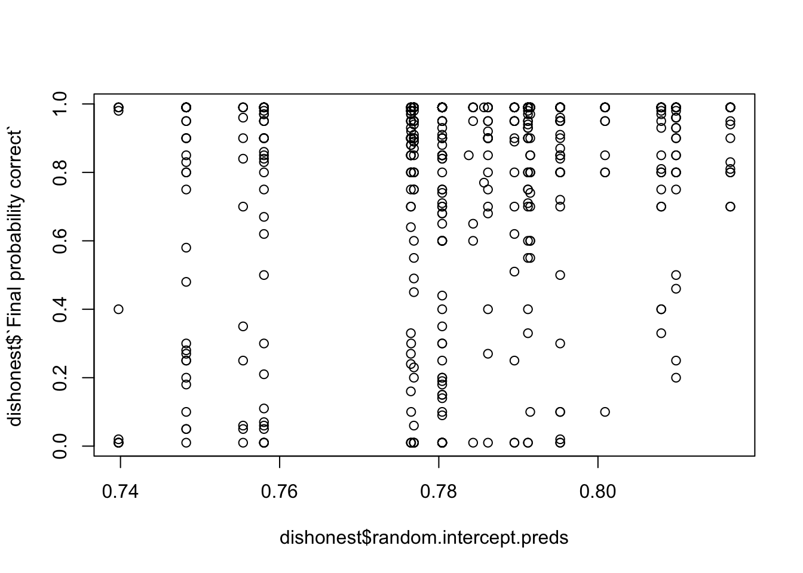

Results
Notes:
- Some of this is already in or was based on the blogpost/interface code. Hit show to see code. I switch between R and Python - Some of this won’t make it to the paper. You can probably skip preprocessing unless you want to check certain things, example: did we make sure to remove judgments based on X condition
1 Preprocessing
1.1 Importing, filtering, and adding columns
We have 3 sets of data from the interface:
import pandas as pd
import numpy as np
import altair as alt
import math as math
import matplotlib.pyplot as plt
import re
pd.options.mode.chained_assignment = None # default='warn'
# Load summaries that can be downloaded from the interface
data_path = "/Users/bila/git/for-debate/debate/save/official/summaries/"
debates = pd.read_csv(data_path + "debates.csv", keep_default_na=True)
sessions = pd.read_csv(data_path + "sessions.csv", keep_default_na=True)
turns = pd.read_csv(data_path + "turns.csv", keep_default_na=True)
print(f' {debates.shape} - Debates') ;## (631, 29) - Debatesprint(f'{sessions.shape} - Sessions, which has multiple rows (of participants) for each debate') ;## (1869, 46) - Sessions, which has multiple rows (of participants) for each debateprint(f'{turns.shape} - and Turns, which has multiple rows (of participant turns) for each debate')## (6259, 15) - and Turns, which has multiple rows (of participant turns) for each debate# Only include debates within a given period
debates["Start time"] = pd.to_datetime(debates["Start time"], unit="ms")
debates["End time"] = pd.to_datetime(debates["End time"], unit="ms")
debates["Last modified time"] = pd.to_datetime(debates["Last modified time"], unit="ms")
debates = debates[
(debates["Start time"] > pd.to_datetime("10/02/23", format="%d/%m/%y")) &
(debates["End time"] < pd.to_datetime("01/09/23", format="%d/%m/%y"))
]
### for filtering to when we had AI debates: 16/07/23
# Filter sessions & turns to only the selected debates
sessions = sessions.merge(debates[["Room name"]], how="inner", on="Room name")
turns = turns.merge(debates[["Room name"]], how="inner", on="Room name")
print(f'We have {len(debates)} debates when filtering out the initial pilots last fall')## We have 582 debates when filtering out the initial pilots last fall# Secondary analysis: Question Difficulty
# Create new columns with bin labels
debates['Untimed annotator context bins'] = pd.cut(debates['Untimed annotator context'].round(), bins=[0, 1, 2, 3, 4], labels=['1', '2', '3', '4'], right=True)
#print(debates['Untimed annotator context'].round().value_counts()) #check
#print(debates['Untimed annotator context bins'].value_counts()) #check
debates['Speed annotator accuracy bins'] = pd.cut(debates['Speed annotator accuracy'].round(1), bins=[0, 0.1, 0.2, 0.3, 0.4, 0.5,0.6], labels=['0', '0.1', '0.2','0.3','0.4','0.5'], right=False)
## respectively, those speed annotator accuracies probably mean 0 right, 1 right, 2 right
#print(debates['Speed annotator accuracy'].round(1).value_counts().sort_index()) #check #0.5 acc?
#print(debates['Speed annotator accuracy bins'].value_counts().sort_index()) #check
debates['Final_Accuracy'] = debates['Final probability correct'] > 0.5
print(f'Average accuracy per context required by question:\n{debates.groupby("Untimed annotator context bins")["Final_Accuracy"].agg(Proportion_True=lambda x: x.mean(),Total_Count="size")}\nOverall accuracy goes down the more context is required')## Average accuracy per context required by question:
## Proportion_True Total_Count
## Untimed annotator context bins
## 1 0.781250 64
## 2 0.711382 246
## 3 0.702857 175
## 4 0.639175 97
## Overall accuracy goes down the more context is requiredprint(f'Average accuracy per difficulty based on speed annotator accuracy:\n{debates.groupby("Speed annotator accuracy bins")["Final_Accuracy"].agg(Proportion_True=lambda x: x.mean(),Total_Count="size")}\nHm, this seems less likely to be a good indicator of question difficulty')## Average accuracy per difficulty based on speed annotator accuracy:
## Proportion_True Total_Count
## Speed annotator accuracy bins
## 0 0.728682 129
## 0.1 NaN 0
## 0.2 0.697509 281
## 0.3 0.666667 3
## 0.4 0.698795 166
## 0.5 0.666667 3
## Hm, this seems less likely to be a good indicator of question difficulty
# Determine settings for each row
def setups(row):
if 'GPT-4' in (row['Honest debater'], row['Dishonest debater']):
if row['Is single debater']:
return "AI Consultancy " + ("Honest" if row['Has honest debater'] else "Dishonest")
else:
return "AI Debate"
else:
if row['Is single debater']:
return "Human Consultancy " + ("Honest" if row['Has honest debater'] else "Dishonest")
else:
return "Human Debate"
debates['Setting'] = debates.apply(setups, axis=1)
# Agregate settings - the 4 that we normally talk about:
debates['Final_Setting'] = debates['Setting'].str.replace(' Honest', '').str.replace(' Dishonest', '')1.2 Merging, filtering for judgments
# Merge sessions with debates, so we have each judge's final probability correct and the debate's metadata
source = sessions.merge(
debates[["Room name", "Debater A","Debater B","Honest debater", "Dishonest debater",
"Is single debater", 'Has honest debater',
"Final_Setting", "Setting",
"Question", "Article ID", "Story length",
"Speed annotator accuracy bins","Untimed annotator context bins",
"Speed annotator accuracy","Untimed annotator context", "Is offline",
'End time', 'Last modified time']],
how="left",
on="Room name",
)
print(f'After merging debates with sessions, we have the following participant counts for those debates:\n{source["Role"].value_counts()}') ## After merging debates with sessions, we have the following participant counts for those debates:
## Judge 548
## Debater B 486
## Debater A 457
## Offline Judge 232
## Name: Role, dtype: int64#[source['Is over'] == True] to check for completed online/offline debates
# Filter out incomplete judgments
judgments = source[source['Final probability correct'].notnull()]
print(f'After filtering to judges that have finalized their judgment, we have the following judgments per role:\n{judgments["Role"].value_counts()}\nfor a total of {len(judgments)} judgments.')## After filtering to judges that have finalized their judgment, we have the following judgments per role:
## Judge 507
## Offline Judge 223
## Name: Role, dtype: int64
## for a total of 730 judgments.print(f'Of those judgments, we have this much for each setting (not consolidating honest - dishonest consultancies):\n{judgments["Setting"].value_counts()}')## Of those judgments, we have this much for each setting (not consolidating honest - dishonest consultancies):
## Human Debate 419
## AI Debate 92
## Human Consultancy Dishonest 69
## AI Consultancy Honest 56
## Human Consultancy Honest 54
## AI Consultancy Dishonest 40
## Name: Setting, dtype: int64judgments['Final_Accuracy'] = judgments['Final probability correct'] > 0.5
print(f'Of those judgments, we have this much for each setting (aggregated):\n{judgments.groupby("Final_Setting")["Final_Accuracy"].agg(Proportion_True=lambda x: x.mean(),Total_Count="size").sort_index()}')## Of those judgments, we have this much for each setting (aggregated):
## Proportion_True Total_Count
## Final_Setting
## AI Consultancy 0.802083 96
## AI Debate 0.782609 92
## Human Consultancy 0.707317 123
## Human Debate 0.878282 419# Remove judges who see the story more than once
judgments['base_room_name'] = judgments['Room name'].str.extract('(.*)\d+$', expand=False).fillna(judgments['Room name'])
judgments = judgments.sort_values(by=['base_room_name','End time']).groupby(['Participant', 'base_room_name']).first().reset_index()
print(f'1. We then filter to judgments where the judge has only seen a story once, and now we have this much for each setting (aggregated):\n{judgments.groupby("Final_Setting")["Final_Accuracy"].agg(Proportion_True=lambda x: x.mean(),Total_Count="size").sort_index()}')## 1. We then filter to judgments where the judge has only seen a story once, and now we have this much for each setting (aggregated):
## Proportion_True Total_Count
## Final_Setting
## AI Consultancy 0.802083 96
## AI Debate 0.782609 92
## Human Consultancy 0.707317 123
## Human Debate 0.869452 383# Filter to online judges only
judgments_online = judgments[judgments["Role"] == "Judge"]
print(f'2. We\'ll make a copy of the online judgments only leaving us with the following judgments:\n{judgments_online.groupby("Final_Setting")["Final_Accuracy"].agg(Proportion_True=lambda x: x.mean(),Total_Count="size")}') #halves the data## 2. We'll make a copy of the online judgments only leaving us with the following judgments:
## Proportion_True Total_Count
## Final_Setting
## AI Consultancy 0.797872 94
## AI Debate 0.791209 91
## Human Consultancy 0.709091 110
## Human Debate 0.865979 194judgments_online = judgments_online[judgments_online['Untimed annotator context bins'].isin(['2', '3', '4'])]
print(f'3. We then filter to judgments which require more than a sentence or two, and now we have this much for each setting (aggregated):\n{judgments_online.groupby(["Final_Setting"])["Final_Accuracy"].agg(Proportion_True=lambda x: x.mean(),Total_Count="size")}\nThis is where debate accuracy drops')## 3. We then filter to judgments which require more than a sentence or two, and now we have this much for each setting (aggregated):
## Proportion_True Total_Count
## Final_Setting
## AI Consultancy 0.806452 93
## AI Debate 0.781609 87
## Human Consultancy 0.700935 107
## Human Debate 0.844156 154
## This is where debate accuracy dropspd.set_option('display.max_columns', None)
total_counts_for_setting = judgments_online.groupby('Final_Setting').size()
result = judgments_online.groupby(["Final_Setting", "Untimed annotator context bins"], observed=False).agg(
Proportion_True=pd.NamedAgg(column='Final_Accuracy', aggfunc=lambda x: x.mean()),
Count=pd.NamedAgg(column='Final_Accuracy', aggfunc='size'),
Proportion_Count=pd.NamedAgg(column='Final_Setting', aggfunc=lambda x: len(x) / total_counts_for_setting[x.mode()])
)
print(f'Are the difficult questions equally enough distributed amongst settings?:\n{result}')## Are the difficult questions equally enough distributed amongst settings?:
## Proportion_True Count \
## Final_Setting Untimed annotator context bins
## AI Consultancy 1 NaN 0
## 2 0.823529 51
## 3 0.826087 23
## 4 0.736842 19
## AI Debate 1 NaN 0
## 2 0.777778 45
## 3 0.772727 22
## 4 0.800000 20
## Human Consultancy 1 NaN 0
## 2 0.634146 41
## 3 0.708333 48
## 4 0.833333 18
## Human Debate 1 NaN 0
## 2 0.890411 73
## 3 0.816667 60
## 4 0.761905 21
##
## Proportion_Count
## Final_Setting Untimed annotator context bins
## AI Consultancy 1 NaN
## 2 0.548387
## 3 0.247312
## 4 0.204301
## AI Debate 1 NaN
## 2 0.517241
## 3 0.252874
## 4 0.229885
## Human Consultancy 1 NaN
## 2 0.383178
## 3 0.448598
## 4 0.168224
## Human Debate 1 NaN
## 2 0.474026
## 3 0.389610
## 4 0.136364pd.reset_option('display.max_columns')So question difficulty isn’t perfectly balanced… but consultancies have a different relationship with question difficulty anyway? need a second opinion We might at least want to ratio it better for AI settings…
1.3 Trying to balance the data
- Balancing honest & dishonest consultancies
- Question weights
1.3.1 Balancing honest & dishonest consultancies
def balance_consultancies(df, sample_setting, random_state):
"""
Sample distinct questions, then use common questions, ensure equal counts.
"""
consult_df = df[df['Setting'].str.contains(sample_setting, na=False)]
honest_df = consult_df[consult_df['Setting'].str.contains('Honest')]
dishonest_df = consult_df[consult_df['Setting'].str.contains('Dishonest')]
sample_column_name = f'{sample_setting} Sample'
df[sample_column_name] = False
# Separate into distinct and common questions
# First, let's extract the combinations of 'Article ID' and 'Question' for both honest and dishonest dataframes
honest_combinations = set(honest_df[['Article ID', 'Question']].itertuples(index=False, name=None))
dishonest_combinations = set(dishonest_df[['Article ID', 'Question']].itertuples(index=False, name=None))
# Identifying the common and distinct combinations
common_combinations = honest_combinations.intersection(dishonest_combinations)
distinct_honest_combinations = honest_combinations - common_combinations
distinct_dishonest_combinations = dishonest_combinations - common_combinations
# Filtering the original dataframes based on these combinations to get distinct and common dataframes
common_honest_df = honest_df[honest_df.set_index(['Article ID', 'Question']).index.isin(common_combinations)]
common_dishonest_df = dishonest_df[dishonest_df.set_index(['Article ID', 'Question']).index.isin(common_combinations)]
distinct_honest_df = honest_df[honest_df.set_index(['Article ID', 'Question']).index.isin(distinct_honest_combinations)]
distinct_dishonest_df = dishonest_df[dishonest_df.set_index(['Article ID', 'Question']).index.isin(distinct_dishonest_combinations)]
def extract_correct_index(sample_df):
if isinstance(sample_df.index, pd.MultiIndex):
return sample_df.index.get_level_values(2)
else:
return sample_df.index
# Get distinct consultancies
sample_size = min(len(distinct_honest_df), len(distinct_dishonest_df))
honest_sample = distinct_honest_df.sample(sample_size, random_state=random_state)
dishonest_sample = distinct_dishonest_df.sample(sample_size, random_state=random_state)
df.loc[extract_correct_index(honest_sample), sample_column_name] = True
df.loc[extract_correct_index(dishonest_sample), sample_column_name] = True
# Drop sampled questions from distinct dataframes
honest_remove_distinct = set(honest_sample[['Article ID', 'Question']].itertuples(index=False, name=None))
dishonest_remove_distinct = set(dishonest_sample[['Article ID', 'Question']].itertuples(index=False, name=None))
distinct_honest_df = distinct_honest_df[~distinct_honest_df.index.isin(honest_sample.index)]
distinct_dishonest_df = distinct_dishonest_df[~distinct_dishonest_df.index.isin(dishonest_sample.index)]
honest_distinct_remaining = len(distinct_honest_df)
dishonest_distinct_remaining = len(distinct_dishonest_df)
# Sample from remaining distinct questions, using common questions for the other (bigger count) setting as needed
if honest_distinct_remaining > dishonest_distinct_remaining:
sample_size = min(honest_distinct_remaining, len(common_dishonest_df))
honest_sample = distinct_honest_df.sample(sample_size, random_state=random_state)
dishonest_sample = common_dishonest_df.sample(sample_size, random_state=random_state)
df.loc[extract_correct_index(dishonest_sample), sample_column_name] = True
df.loc[extract_correct_index(honest_sample), sample_column_name] = True
dishonest_remove_common = set(dishonest_sample[['Article ID', 'Question']].itertuples(index=False, name=None))
common_dishonest_df = common_dishonest_df[~common_dishonest_df.index.isin(dishonest_sample.index)]
common_honest_df = common_honest_df[~common_honest_df.index.isin(honest_sample.index)]
else:
sample_size = min(dishonest_distinct_remaining, len(common_honest_df))
honest_sample = common_honest_df.sample(sample_size, random_state=random_state)
dishonest_sample = distinct_dishonest_df.sample(sample_size, random_state=random_state)
df.loc[extract_correct_index(dishonest_sample), sample_column_name] = True
df.loc[extract_correct_index(honest_sample), sample_column_name] = True
honest_remove_common = set(honest_sample[['Article ID', 'Question']].itertuples(index=False, name=None))
common_dishonest_df = common_dishonest_df[~common_dishonest_df.index.isin(dishonest_sample.index)]
common_honest_df = common_honest_df[~common_honest_df.index.isin(honest_sample.index)]
# Remaining independent samples from common_honest_df
if len(common_honest_df) > 0 or len(common_dishonest_df) > 0:
sample_size = min(len(common_honest_df), len(common_dishonest_df))
honest_sample = common_honest_df.sample(sample_size, random_state=random_state)
dishonest_sample = common_dishonest_df.sample(sample_size, random_state=random_state)
df.loc[extract_correct_index(honest_sample), sample_column_name] = True
df.loc[extract_correct_index(dishonest_sample), sample_column_name] = True
return df
# Run the sampling to balance the consultancies
judgments_online = balance_consultancies(judgments_online, 'Human Consultancy', random_state = 12345)
judgments_online = balance_consultancies(judgments_online, 'AI Consultancy', random_state = 12345)
# Create one sample column for easier indexing, create mask
#sample_columns = [col for col in judgments_online.columns if 'Sample' in col]
#judgments_online['Sample'] = judgments_online[sample_columns].any(axis=1)
#consultancy_balanced = (~judgments_online['Setting'].str.contains('Consultancy', case=False, na=False)) | (judgments_online['Sample'] == True)
#print(f'Accuracy after balancing consultancies:\n{judgments_online[consultancy_balanced].groupby(["Final_Setting"])["Final_Accuracy"].agg(Proportion_True=lambda x: x.mean(),Total_Count="size")}')
#from statsmodels.stats.proportion import proportions_ztest
#def run_experiment(judgments_online):
# judgments_online['Sample'] = False
# judgments_online = balance_consultancies(judgments_online, 'Human Consultancy')
# judgments_online = balance_consultancies(judgments_online, 'AI Consultancy')
# sample_columns = [col for col in judgments_online.columns if 'Sample' in col]
# judgments_online['Sample'] = judgments_online[sample_columns].any(axis=1)
# consultancy_balanced = (~judgments_online['Setting'].str.contains('Consultancy', case=False, na=False)) | (judgments_online['Sample'] == True)
# result = judgments_online[consultancy_balanced].groupby(["Final_Setting"])["Final_Accuracy"].agg(Proportion_True=lambda x: x.mean(), Total_Count="size")
# return result
# Number of iterations
#num_iterations = 1000
# Store results from each iteration
#results = []
#p_vals = []
# Run the experiment multiple times
#for _ in range(num_iterations):
# result = run_experiment(judgments_online.copy()) # Use a copy to ensure original data remains unchanged
# results.append(result)
# # Run the proportions test
# group_human_debate = result.loc['Human Debate']
# group_human_consultancy = result.loc['Human Consultancy']
# count = [group_human_debate.Proportion_True * group_human_debate.Total_Count, group_human_consultancy.Proportion_True * group_human_consultancy.Total_Count]
# nobs = [group_human_debate.Total_Count, group_human_consultancy.Total_Count]
# z_stat, p_val = proportions_ztest(count, nobs)
# p_vals.append(p_val)
# Calculate the average of the results
#average_result = pd.concat(results).groupby(level=0).mean()
#print(f'\nAverage accuracy after {num_iterations} iterations:\n{average_result}')
#print(f'pval mean: {np.mean(p_vals)}')1.3.2 Balance debates? (not actually used)
def balance_debates(df, sample_setting, random_state):
debates_df = df[df['Setting'].str.contains(sample_setting, na=False)]
sample_column_name = f'{sample_setting} Sample'
df[sample_column_name] = False
def extract_correct_index(sample_df):
if isinstance(sample_df.index, pd.MultiIndex):
return sample_df.index.get_level_values(2)
else:
return sample_df.index
# Get distinct consultancies
sample_size = len(debates_df.groupby(['Question', 'Article ID']))
sample_debates = debates_df.groupby(['Question', 'Article ID']).apply(lambda x: x.sample(1, random_state=random_state)).sample(sample_size, random_state=random_state)
df.loc[extract_correct_index(sample_debates), sample_column_name] = True
return df
# Run the sampling to balance the consultancies
judgments_online = balance_debates(judgments_online, 'Human Debate', random_state = 123)
judgments_online = balance_debates(judgments_online, 'AI Debate', random_state = 123)1.3.3 Question weights
# Create one sample column for easier indexing, create mask
sample_columns = [col for col in judgments_online.columns if 'Sample' in col]
consultancy_sample_columns = [col for col in judgments_online.columns if 'Consultancy Sample' in col]
judgments_online['Sample'] = judgments_online[sample_columns].any(axis=1)
judgments_online['Consultancy Sample'] = judgments_online[consultancy_sample_columns].any(axis=1)
consultancy_balanced = (~judgments_online['Setting'].str.contains('Consultancy', case=False, na=False)) | (judgments_online['Consultancy Sample'] == True)
print(f'Accuracy per setting (aggregated) after balancing:\n{judgments_online[consultancy_balanced].groupby("Final_Setting")["Final_Accuracy"].agg(Proportion_True=lambda x: x.mean(),Total_Count="size")}\nAccuracies remain pretty similar')## Accuracy per setting (aggregated) after balancing:
## Proportion_True Total_Count
## Final_Setting
## AI Consultancy 0.828947 76
## AI Debate 0.781609 87
## Human Consultancy 0.718750 96
## Human Debate 0.844156 154
## Accuracies remain pretty similar
def question_weights(data, columns, weight_column_name, consultancy_sample=None, debate_sample=None):
# 0. Make a copy of the original data for weight calculations
working_data = data.copy()
# 0.1. Custom filtering based on the 'Setting' column
consultancy_condition = working_data['Setting'].str.contains('Consultancy', case=False, na=False)
debate_condition = ~consultancy_condition
if consultancy_sample is not None:
consultancy_condition &= (working_data['Sample'] == consultancy_sample)
if debate_sample is not None: # uncomment if we want to sample debates
debate_condition &= (working_data['Sample'] == debate_sample)
combined_mask = consultancy_condition | debate_condition
working_data = working_data[combined_mask]
# 1. Calculate the frequency of each question in the dataset
question_frequency = working_data.groupby(columns).size()
# 2. Invert the frequency to get the weight for each question
question_weights = 1 / question_frequency
# 3. Normalize the weights
#question_weights = question_weights / question_weights.sum() * len(question_weights)
# 4. Assign the calculated weights to the original data and fill missing values with 0
data.loc[combined_mask, weight_column_name] = data[combined_mask].set_index(columns).index.map(question_weights).fillna(0).values
data[weight_column_name].fillna(0, inplace=True)
return data
judgments_online = question_weights(
data=judgments_online,
columns=['Article ID', 'Question'],
weight_column_name='initial_question_weights'
)
judgments_online = question_weights(
data=judgments_online,
columns=['Article ID', 'Question', 'Final_Setting'],
weight_column_name='initial_question_weights_grouped_setting'
)def print_weight_summary_by_setting(df, weight_column, consultancy_sample=None):
consultancy_condition = df['Setting'].str.contains('Consultancy', case=False, na=False)
if consultancy_sample is not None:
consultancy_condition &= (df['Consultancy Sample'] == consultancy_sample)
for setting in sorted(df['Setting'].unique()):
total_weight = df[df['Setting'] == setting][weight_column].sum()
print(f"Total {weight_column} for {setting}: {total_weight:.2f}")
print("\n")
print('Unsampled consultancies/debates (initial) weights, by group setting')## Unsampled consultancies/debates (initial) weights, by group settingprint_weight_summary_by_setting(judgments_online, 'initial_question_weights_grouped_setting')## Total initial_question_weights_grouped_setting for AI Consultancy Dishonest: 32.50
## Total initial_question_weights_grouped_setting for AI Consultancy Honest: 49.50
## Total initial_question_weights_grouped_setting for AI Debate: 75.00
## Total initial_question_weights_grouped_setting for Human Consultancy Dishonest: 34.67
## Total initial_question_weights_grouped_setting for Human Consultancy Honest: 26.33
## Total initial_question_weights_grouped_setting for Human Debate: 107.00# Recalculate weights for balanced consultancies, all debates
judgments_online = question_weights(
data=judgments_online,
columns=['Article ID', 'Question'],
weight_column_name='sampled_consultancies_all_debates_weights',
consultancy_sample=True
)
judgments_online = question_weights(
data=judgments_online,
columns=['Article ID', 'Question', 'Setting'],
weight_column_name='sampled_consultancies_all_debates_weights_setting',
consultancy_sample=True
)
judgments_online = question_weights(
data=judgments_online,
columns=['Article ID', 'Question', 'Final_Setting'],
weight_column_name='sampled_consultancies_all_debates_weights_grouped_setting',
consultancy_sample=True
)
print('Consultancy balanced weights, not grouped - (not balanced, would have to change balancing function...')## Consultancy balanced weights, not grouped - (not balanced, would have to change balancing function...print_weight_summary_by_setting(judgments_online[consultancy_balanced], 'sampled_consultancies_all_debates_weights', consultancy_sample=True)## Total sampled_consultancies_all_debates_weights for AI Consultancy Dishonest: 27.82
## Total sampled_consultancies_all_debates_weights for AI Consultancy Honest: 36.45
## Total sampled_consultancies_all_debates_weights for AI Debate: 66.47
## Total sampled_consultancies_all_debates_weights for Human Consultancy Dishonest: 16.60
## Total sampled_consultancies_all_debates_weights for Human Consultancy Honest: 17.37
## Total sampled_consultancies_all_debates_weights for Human Debate: 81.30print('Consultancy balanced weights, grouped by Setting - see that the consultancies are balanced between those with honest or dishonest consultant')## Consultancy balanced weights, grouped by Setting - see that the consultancies are balanced between those with honest or dishonest consultantprint_weight_summary_by_setting(judgments_online[consultancy_balanced], 'sampled_consultancies_all_debates_weights_setting', consultancy_sample=True)## Total sampled_consultancies_all_debates_weights_setting for AI Consultancy Dishonest: 38.00
## Total sampled_consultancies_all_debates_weights_setting for AI Consultancy Honest: 38.00
## Total sampled_consultancies_all_debates_weights_setting for AI Debate: 75.00
## Total sampled_consultancies_all_debates_weights_setting for Human Consultancy Dishonest: 42.00
## Total sampled_consultancies_all_debates_weights_setting for Human Consultancy Honest: 41.00
## Total sampled_consultancies_all_debates_weights_setting for Human Debate: 107.00print('Consultancy balanced weights, grouped by Final Setting')## Consultancy balanced weights, grouped by Final Settingprint_weight_summary_by_setting(judgments_online[consultancy_balanced], 'sampled_consultancies_all_debates_weights_grouped_setting', consultancy_sample=True)## Total sampled_consultancies_all_debates_weights_grouped_setting for AI Consultancy Dishonest: 38.00
## Total sampled_consultancies_all_debates_weights_grouped_setting for AI Consultancy Honest: 38.00
## Total sampled_consultancies_all_debates_weights_grouped_setting for AI Debate: 75.00
## Total sampled_consultancies_all_debates_weights_grouped_setting for Human Consultancy Dishonest: 30.17
## Total sampled_consultancies_all_debates_weights_grouped_setting for Human Consultancy Honest: 30.83
## Total sampled_consultancies_all_debates_weights_grouped_setting for Human Debate: 107.00
judgments_online = question_weights(
data=judgments_online,
columns=['Article ID', 'Question'],
weight_column_name='sampled_consultancies_debates_weights',
consultancy_sample=True,
debate_sample=True
)
judgments_online = question_weights(
data=judgments_online,
columns=['Article ID', 'Question', 'Setting'],
weight_column_name='sampled_consultancies_debates_weights_setting',
consultancy_sample=True,
debate_sample=True
)
judgments_online = question_weights(
data=judgments_online,
columns=['Article ID', 'Question', 'Final_Setting'],
weight_column_name='sampled_consultancies_debates_weights_grouped_setting',
consultancy_sample=True,
debate_sample=True
)Note: we are not balancing between settings(?), and more counts of the human debate settings are on the same questions..?
1.4 Judge Accuracy Vis
import altair
# set graphic parameters
correctColor = "green"
incorrectColor = "crimson"
nullColor = "lightgrey"
onlineColor = "orange"
offlineColor = "blue"
aggColor = "black"
fullWidth = 1400
# fullHeight = 600
def outcomes_by_field(source, rowEncoding = None):
source['outcome'] = source.apply(
lambda row: "incomplete" if math.isnan(row['Final probability correct'])
else "tie" if row['Final probability correct'] == 0.5
else "correct" if row['Final probability correct'] > 0.5
else "incorrect",
axis=1
)
source['Final probability correct (with imputation)'] = source.apply(
lambda row: 0.5 if math.isnan(row['Final probability correct'])
else row['Final probability correct'],
axis=1
)
source['Final probability correct (dist from half)'] = source.apply(
lambda row: 0.0 if math.isnan(row['Final probability correct'])
else abs(row['Final probability correct'] - 0.5),
axis=1
)
if rowEncoding is None:
groups = ['outcome']
else:
groups = ['outcome', rowEncoding.field]
base = alt.Chart(
source
).transform_joinaggregate(
groupby=groups,
group_count='count()'
).encode(
y=alt.Y('outcome:N', scale=alt.Scale(domain=['correct', 'incorrect', 'tie', 'incomplete']))
)
if rowEncoding is not None:
base = base.encode(row=rowEncoding)
main_bar = base.mark_bar().encode(
x=alt.X('count():Q', axis=None),
color = alt.Color(
'Final probability correct (with imputation):Q',
scale=alt.Scale(range=[incorrectColor, nullColor, correctColor], domain=[0.0, 1.0]),
title='Final Probability\nAssigned to\nCorrect Answer'
),
order=alt.Order(
'Final probability correct (dist from half):Q',
sort='ascending'
),
tooltip = [
'outcome:N',
alt.Tooltip('group_count:Q', title="Judgments"),
alt.Tooltip('count():Q', title = 'Judgments with this probability'),
'Final probability correct:Q'
]
).properties(width=fullWidth)# height=fullHeight/3)
return main_bar
def accuracy_by_field(source, by_turn: bool = False, yEncoding = None, invert = False):
if by_turn:
prob_correct_field = 'Probability correct'
else:
prob_correct_field = 'Final probability correct'
if source.get('Final probability assigned') is not None:
prob_assigned_field = 'Final probability assigned'
else:
prob_assigned_field = prob_correct_field
if yEncoding is None:
groups = []
else:
groups = [yEncoding.field]
base = alt.Chart(source).transform_joinaggregate(
total = "count()",
groupby = groups
).transform_calculate(
proportion = '1 / datum.total'
).transform_calculate(
is_correct = f'datum["{prob_correct_field}"] > 0.5 ? 1 : 0',
is_win = f'datum["{prob_assigned_field}"] > 0.5 ? 1 : 0',
is_not_correct = f'datum["{prob_correct_field}"] <= 0.5 ? 1 : 0'
)
if yEncoding is not None:
base = base.encode(y=yEncoding)
main_bar = base.mark_bar().encode(
x=alt.X('sum(proportion):Q',
axis=alt.Axis(title=None, format='.0%', labelExpr="(datum.value * 5) % 1 ? null : datum.label"),
scale=alt.Scale(domain=[0.0, 1.0])
),
color=alt.Color(f'{prob_correct_field}:Q', scale=alt.Scale(range=[incorrectColor, nullColor, correctColor], domain=[0.0, 1.0]), title = ["Probability","Assigned"], legend=alt.Legend(format=".0%", labelFontSize=12, titleFontSize=12, gradientLength=225, gradientThickness=35)),
order=alt.Order(
f'{prob_assigned_field}:Q',
sort='descending' if not invert else 'ascending'
),
tooltip = [
'count():Q',
'total:Q',
'sum(proportion):Q',
f'{prob_correct_field}:Q',
'Room name:N',
'Participant:N'
]
).properties(width=fullWidth)# height=fullHeight/12)
prop_color = aggColor
# rule_thickness = 1.0
# err_thickness = 1.0
point_size = 25.0
mean_field = 'is_win' if not invert else 'is_not_correct'
gold_err = (base
).mark_rule(
# extent='ci',
color=prop_color,
).encode(
x=f'ci0({mean_field}):Q',
x2=f'ci1({mean_field}):Q',
# scale=alt.Scale(zero=False)
tooltip=[]
)
gold_mean = base.mark_point(
# thickness=2.0
color=prop_color, size=point_size, filled=True
).encode(
x=alt.X(f'mean({mean_field}):Q',
scale=alt.Scale(zero=False)),
)
gold_mean_num = base.mark_text(
color=prop_color,
align='left',
baseline='bottom',
fontSize=24,
fontWeight='bold',
dx=4,
dy=-4
).encode(
text=alt.Text(f'mean({mean_field}):Q', format='.0%'),
x=alt.X(f'mean({mean_field}):Q',
scale=alt.Scale(zero=False)),
)
return main_bar + gold_err + gold_mean + gold_mean_num
def accuracy_by_judge_setting(setting,data_frame_source):
source = data_frame_source
yEncoding = alt.Y(field = setting, type='nominal', title=None)
outcomes_source = source
accuracy_source = source[source['Final probability correct'].notna()]
chart = alt.vconcat(
accuracy_by_field(
accuracy_source,
yEncoding = yEncoding
).properties(title=alt.TitleParams(text="Judge Accuracy", fontSize=28)),
).resolve_scale(x = 'independent')
return chart.configure(
padding = {"left": 7, "top": 5, "right": 5, "bottom": 5},
axis = alt.Axis(labelFontSize=20,labelLimit=300),
legend = alt.LegendConfig(disable = True)
).configure_view(
step=65, # adjust the step parameter for margins
)
accuracy_by_judge_setting(setting = 'Final_Setting', data_frame_source = judgments_online.loc[
(judgments_online['Consultancy Sample'] == True) |
(~judgments_online['Final_Setting'].str.contains("Consultancy", na=False))
])
#chart.save('judge_accuracy_settings.png', scale_factor=4)consultancies = judgments_online.loc[judgments_online['Consultancy Sample'] == True]
consultancies['Setting'] = consultancies['Setting'].apply(lambda x: ' '.join(x.split()[:-1]) + f" ({x.split()[-1].lower()})")
accuracy_by_judge_setting(setting = 'Setting', data_frame_source = consultancies)
sample = judgments_online.loc[
(judgments_online['Consultancy Sample'] == True) |
(~judgments_online['Final_Setting'].str.contains("Consultancy", na=False))
]1.5 Load into R environment
sample <- py$sample
sample <- sample[,c("Room name", "Participant")]
write.csv(sample, "/Users/bila/Downloads/python_sample.csv")
set.seed(123)
# Read in objects from Python with py$
judgments <- py$judgments
judgments_online <- py$judgments_online
correctColor = "#008000"
incorrectColor = "#DC143C"
# Change type into factor so it is read as categories which can be manipulated instead of characters
judgments_online$Participant <- as.factor(judgments_online$Participant)
judgments_online$Setting <- as.factor(judgments_online$Setting)
# Doing some sanity checks
subset_dishonest <- judgments_online[judgments_online$`Human Consultancy Sample` == TRUE & judgments_online$Setting == 'Human Consultancy Dishonest', c("sampled_consultancies_all_debates_weights_grouped_setting","Final_Accuracy")]
subset_honest <- judgments_online[judgments_online$`Human Consultancy Sample` == TRUE & judgments_online$Setting == 'Human Consultancy Honest', c("sampled_consultancies_all_debates_weights_grouped_setting","Final_Accuracy")]
#Are the question weights equal for human consultancies?"
table(subset_dishonest$sampled_consultancies_all_debates_weights_grouped_setting) ; table(subset_honest$sampled_consultancies_all_debates_weights_grouped_setting)##
## 0.25 0.333333333333333 0.5 1
## 2 5 26 15##
## 0.25 0.333333333333333 0.5 1
## 2 10 18 18#What does the accuracy look like for those question weights?
#table(subset_dishonest$sampled_consultancies_all_debates_weights_grouped_setting, subset_dishonest$Final_Accuracy)
#table(subset_honest$sampled_consultancies_all_debates_weights_grouped_setting, subset_honest$Final_Accuracy)
#subset_human_consultancies <- judgments_online[judgments_online$`Human Consultancy Sample` == TRUE & judgments_online$Final_Setting == 'Human Consultancy', c("sampled_consultancies_all_debates_weights_grouped_setting","Final_Accuracy")]
#table(subset_human_consultancies$sampled_consultancies_all_debates_weights_grouped_setting, subset_human_consultancies$Final_Accuracy)
#Difference between grouping and not grouping question weights
table(judgments_online$Final_Setting, judgments_online$sampled_consultancies_all_debates_weights_grouped_setting) ; table(judgments_online$Final_Setting, judgments_online$sampled_consultancies_all_debates_weights)##
## 0 0.25 0.333333333333333 0.5 1
## AI Consultancy 17 0 0 0 76
## AI Debate 0 0 0 24 63
## Human Consultancy 11 4 15 44 33
## Human Debate 0 0 0 94 60##
## 0 0.166666666666667 0.2 0.25 0.333333333333333 0.5 1
## AI Consultancy 17 2 8 4 1 0 61
## AI Debate 0 4 14 6 0 3 60
## Human Consultancy 11 3 19 24 26 18 6
## Human Debate 0 3 14 14 27 61 35# Balanced consultancies difference between grouping and not grouping question weights
consultancy_condition <- (judgments_online$Sample == TRUE) | (!grepl("Consultancy", judgments_online$Final_Setting))
table(judgments_online[consultancy_condition, ]$Final_Setting, judgments_online[consultancy_condition, ]$sampled_consultancies_all_debates_weights_grouped_setting, judgments_online[consultancy_condition, ]$Final_Accuracy)## , , = FALSE
##
##
## 0.25 0.333333333333333 0.5 1
## AI Consultancy 0 0 0 13
## AI Debate 0 0 7 12
## Human Consultancy 3 5 14 5
## Human Debate 0 0 16 8
##
## , , = TRUE
##
##
## 0.25 0.333333333333333 0.5 1
## AI Consultancy 0 0 0 63
## AI Debate 0 0 17 51
## Human Consultancy 1 10 30 28
## Human Debate 0 0 78 52table(judgments_online[consultancy_condition, ]$Final_Setting, judgments_online[consultancy_condition, ]$sampled_consultancies_all_debates_weights, judgments_online[consultancy_condition, ]$Final_Accuracy)## , , = FALSE
##
##
## 0.166666666666667 0.2 0.25 0.333333333333333 0.5 1
## AI Consultancy 0 1 0 0 0 12
## AI Debate 1 3 1 0 2 12
## Human Consultancy 1 5 9 7 3 2
## Human Debate 0 5 2 5 9 3
##
## , , = TRUE
##
##
## 0.166666666666667 0.2 0.25 0.333333333333333 0.5 1
## AI Consultancy 2 7 4 1 0 49
## AI Debate 3 11 5 0 1 48
## Human Consultancy 2 14 15 19 15 4
## Human Debate 3 9 12 22 52 32# Sampled data (balanced consultancies and sampled debates) difference between grouping and not grouping question weights
table(judgments_online[judgments_online$Sample == TRUE, ]$Final_Setting, judgments_online[judgments_online$Sample == TRUE, ]$sampled_consultancies_debates_weights_grouped_setting)##
## 0.25 0.333333333333333 0.5 1
## AI Consultancy 0 0 0 76
## AI Debate 0 0 0 75
## Human Consultancy 4 15 44 33
## Human Debate 0 0 0 107table(judgments_online[judgments_online$Sample == TRUE, ]$Final_Setting, judgments_online[judgments_online$Sample == TRUE, ]$sampled_consultancies_debates_weights)##
## 0.2 0.25 0.333333333333333 0.5 1
## AI Consultancy 1 11 3 0 61
## AI Debate 1 10 2 1 61
## Human Consultancy 2 32 28 28 6
## Human Debate 1 15 12 17 621.6 Robustness Checks
# read other sampling
sample.rooms <- read.csv("~/Downloads/sample-rooms-2.csv", header=FALSE)
# Check whether chosen sample in sample.rooms is the same as judgments_online
# based on columns V2 and V1 in sample.rooms and Participant and `Room name` in judgments_online
sample.rooms_samples <- sort(paste0(sample.rooms$V2, sample.rooms$V1))
judgments_online_samples <- paste0(judgments_online[consultancy_condition,]$Participant, judgments_online[consultancy_condition,]$`Room name`)
missing_sample.room <- sample.rooms[sample.rooms_samples %in% judgments_online_samples == FALSE, ]
sampled_judgments_online <- judgments_online[consultancy_condition,]
missing_judgments_online <- sampled_judgments_online[judgments_online_samples %in% sample.rooms_samples == FALSE, ]
judgments_online$check <- paste0(judgments_online$Participant, judgments_online$`Room name`)
matching_sampled_judgments_online <- subset(judgments_online, judgments_online$check %in% sample.rooms_samples)
rooms_hc <- subset(matching_sampled_judgments_online, matching_sampled_judgments_online$Final_Setting == "Human Consultancy")different_sample = r.rooms_hc
different_sample.groupby(['Question', 'Article ID']).size().value_counts().sum()## 61judgments_online[(judgments_online['Setting'].str.contains('Human Consultancy')) & (judgments_online['Consultancy Sample'] == True)].groupby(['Question', 'Article ID']).size().value_counts().sum()## 61filtered_df1 = different_sample.groupby(['Question', 'Article ID']).filter(lambda x: len(x) > 2)
filtered_df2 = different_sample.groupby(['Question', 'Article ID']).filter(lambda x: len(x) <= 2)
filtered_df1["Untimed annotator context bins"].value_counts()## 3 13
## 2 7
## 4 0
## 1 0
## Name: Untimed annotator context bins, dtype: int64filtered_df2["Untimed annotator context bins"].value_counts()## 2 30
## 3 28
## 4 18
## 1 0
## Name: Untimed annotator context bins, dtype: int64filtered_df1["Final_Accuracy"].mean()## 0.65filtered_df2["Final_Accuracy"].mean()## 0.7631578947368421judgments_online[judgments_online['Final_Setting']=="Human Debate"].groupby(['Question', 'Article ID']).size().value_counts()## 1 60
## 2 47
## dtype: int64judgments_online[judgments_online['Final_Setting']=="AI Debate"].groupby(['Question', 'Article ID']).size().value_counts()## 1 63
## 2 12
## dtype: int64paste("Overall variance is",
var(judgments_online$Final_Accuracy), "(mean way)",
((sum(judgments_online$Final_Accuracy, na.rm = T) / length(judgments_online$Final_Accuracy)) * (1 - (sum(judgments_online$Final_Accuracy, na.rm = T)) / length(judgments_online$Final_Accuracy))) / (length(judgments_online$Final_Accuracy) - 1), "(prop way)")## [1] "Overall variance is 0.166790352504638 (mean way) 0.000378209416110291 (prop way)"# Accuracy variation per setting
judgments_online %>%
group_by(Final_Setting) %>%
summarise(
var_mean = var(Final_Accuracy),
n = length(Final_Accuracy),
x_aka_num_correct = sum(Final_Accuracy),
p_aka_accuracy = (x_aka_num_correct / n),
var_prop = (p_aka_accuracy * (1 - p_aka_accuracy)) / (n - 1)
) %>% mutate(avg_var_mean = mean(var_mean, na.rm = T),
avg_var_prop = mean(var_prop, na.rm = T))# Accuracy variation per setting (consultancies balanced)
judgments_online[consultancy_condition, ] %>%
group_by(Final_Setting) %>%
summarise(
var_mean = var(Final_Accuracy),
n = length(Final_Accuracy),
x_aka_num_correct = sum(Final_Accuracy),
p_aka_accuracy = (x_aka_num_correct / n),
var_prop = (p_aka_accuracy * (1 - p_aka_accuracy)) / (n - 1)
) %>% mutate(avg_var_mean = mean(var_mean, na.rm = T),
avg_var_prop = mean(var_prop, na.rm = T))judgments_online %>%
group_by(base_room_name) %>%
summarise(
var_mean = var(Final_Accuracy),
n = length(Final_Accuracy),
x_aka_num_correct = sum(Final_Accuracy),
p_aka_accuracy = (x_aka_num_correct / n),
var_prop = (p_aka_accuracy * (1 - p_aka_accuracy)) / (n - 1)
) %>% mutate(avg_var_mean = mean(var_mean, na.rm = T),
avg_var_prop = mean(var_prop, na.rm = T))judgments_online %>%
group_by(Question) %>%
summarise(
var_mean = var(Final_Accuracy),
n = length(Final_Accuracy),
x_aka_num_correct = sum(Final_Accuracy),
p_aka_accuracy = (x_aka_num_correct / n),
var_prop = (p_aka_accuracy * (1 - p_aka_accuracy)) / (n - 1)
) %>% mutate(avg_var_mean = mean(var_mean, na.rm = T),
avg_var_prop = mean(var_prop, na.rm = T))judgments_online[consultancy_condition, ] %>%
group_by(base_room_name) %>%
summarise(
var_mean = var(Final_Accuracy),
n = length(Final_Accuracy),
x_aka_num_correct = sum(Final_Accuracy),
p_aka_accuracy = (x_aka_num_correct / n),
var_prop = (p_aka_accuracy * (1 - p_aka_accuracy)) / (n - 1)
) %>% mutate(avg_var_mean = mean(var_mean, na.rm = T),
avg_var_prop = mean(var_prop, na.rm = T))judgments_online[consultancy_condition, ] %>%
group_by(Question) %>%
summarise(
var_mean = var(Final_Accuracy),
n = length(Final_Accuracy),
x_aka_num_correct = sum(Final_Accuracy),
p_aka_accuracy = (x_aka_num_correct / n),
var_prop = (p_aka_accuracy * (1 - p_aka_accuracy)) / (n - 1)
) %>% mutate(avg_var_mean = mean(var_mean, na.rm = T),
avg_var_prop = mean(var_prop, na.rm = T))judgments_online[consultancy_condition,] %>%
group_by(base_room_name) %>%
summarise(
var_mean = var(Final_Accuracy, na.rm = T),
n = length(Final_Accuracy),
x_aka_num_correct = sum(Final_Accuracy, na.rm = T),
p_aka_accuracy = (x_aka_num_correct / n),
var_prop = (p_aka_accuracy * (1 - p_aka_accuracy)) / (n - 1)
) %>% summarise(avg_var_mean = mean(var_mean, na.rm = T),
avg_var_prop = mean(var_prop, na.rm = T))judgments_online[consultancy_condition,] %>%
group_by(Question) %>%
summarise(
var_mean = var(Final_Accuracy, na.rm = T),
n = length(Final_Accuracy),
x_aka_num_correct = sum(Final_Accuracy, na.rm = T),
p_aka_accuracy = (x_aka_num_correct / n),
var_prop = (p_aka_accuracy * (1 - p_aka_accuracy)) / (n - 1)
) %>% summarise(avg_var_mean = mean(var_mean, na.rm = T),
avg_var_prop = mean(var_prop, na.rm = T))2 Results
2.1 Difference in Accuracy
# Make a function to easily try out different weights
acc_diff_test <- function(design, Setting){
print(design)
freq_table <- svytable(~Final_Setting+Final_Accuracy, design)
chisq_result <- svychisq(~Final_Setting+Final_Accuracy, design, statistic = "Chisq")
print(chisq_result)
pairwise_result <- pairwise.prop.test(freq_table, p.adjust.method="none", alternative="two.sided")
print(pairwise_result)
freq_table <- cbind(freq_table, Accuracy = (freq_table[,2] / (freq_table[,1]+freq_table[,2]))*100)
print(freq_table)
}
print("Really raw")## [1] "Really raw"acc_diff_test(svydesign(ids = ~1, data = judgments))## Warning in svydesign.default(ids = ~1, data = judgments): No weights or
## probabilities supplied, assuming equal probability## Independent Sampling design (with replacement)
## print(design)
##
## Pearson's X^2: Rao & Scott adjustment
##
## data: svychisq(~Final_Setting + Final_Accuracy, design, statistic = "Chisq")
## X-squared = 17.998, df = 3, p-value = 0.0004457
##
##
## Pairwise comparisons using Pairwise comparison of proportions
##
## data: freq_table
##
## AI Consultancy AI Debate Human Consultancy
## AI Debate 0.881 - -
## Human Consultancy 0.148 0.277 -
## Human Debate 0.129 0.052 0.000056
##
## P value adjustment method: none
## FALSE TRUE Accuracy
## AI Consultancy 19 77 80.20833
## AI Debate 20 72 78.26087
## Human Consultancy 36 87 70.73171
## Human Debate 50 333 86.94517print("Raw")## [1] "Raw"acc_diff_test(svydesign(ids = ~1, data = judgments_online))## Warning in svydesign.default(ids = ~1, data = judgments_online): No weights or
## probabilities supplied, assuming equal probability## Independent Sampling design (with replacement)
## print(design)
##
## Pearson's X^2: Rao & Scott adjustment
##
## data: svychisq(~Final_Setting + Final_Accuracy, design, statistic = "Chisq")
## X-squared = 8.0006, df = 3, p-value = 0.04637
##
##
## Pairwise comparisons using Pairwise comparison of proportions
##
## data: freq_table
##
## AI Consultancy AI Debate Human Consultancy
## AI Debate 0.8200 - -
## Human Consultancy 0.1199 0.2689 -
## Human Debate 0.5555 0.2970 0.0088
##
## P value adjustment method: none
## FALSE TRUE Accuracy
## AI Consultancy 18 75 80.64516
## AI Debate 19 68 78.16092
## Human Consultancy 32 75 70.09346
## Human Debate 24 130 84.41558print("Balanced consultancies, NO weights") # still sig## [1] "Balanced consultancies, NO weights"acc_diff_test(svydesign(ids = ~1, data = subset(judgments_online, `Consultancy Sample` == TRUE | !grepl("Consultancy", Final_Setting))))## Warning in svydesign.default(ids = ~1, data = subset(judgments_online,
## `Consultancy Sample` == : No weights or probabilities supplied, assuming equal
## probability## Independent Sampling design (with replacement)
## print(design)
##
## Pearson's X^2: Rao & Scott adjustment
##
## data: svychisq(~Final_Setting + Final_Accuracy, design, statistic = "Chisq")
## X-squared = 6.3939, df = 3, p-value = 0.09458
##
##
## Pairwise comparisons using Pairwise comparison of proportions
##
## data: freq_table
##
## AI Consultancy AI Debate Human Consultancy
## AI Debate 0.575 - -
## Human Consultancy 0.129 0.419 -
## Human Debate 0.917 0.297 0.026
##
## P value adjustment method: none
## FALSE TRUE Accuracy
## AI Consultancy 13 63 82.89474
## AI Debate 19 68 78.16092
## Human Consultancy 27 69 71.87500
## Human Debate 24 130 84.41558print("Balanced consultancies, question weights (grouped settings)")## [1] "Balanced consultancies, question weights (grouped settings)"acc_diff_test(svydesign(ids = ~1, data = subset(judgments_online, `Consultancy Sample` == TRUE | !grepl("Consultancy", Final_Setting)), weights = ~sampled_consultancies_all_debates_weights_grouped_setting))## Independent Sampling design (with replacement)
## print(design)
##
## Pearson's X^2: Rao & Scott adjustment
##
## data: svychisq(~Final_Setting + Final_Accuracy, design, statistic = "Chisq")
## X-squared = 2.9692, df = 3, p-value = 0.4323
##
##
## Pairwise comparisons using Pairwise comparison of proportions
##
## data: freq_table
##
## AI Consultancy AI Debate Human Consultancy
## AI Debate 0.73 - -
## Human Consultancy 0.46 0.84 -
## Human Debate 0.85 0.42 0.23
##
## P value adjustment method: none
## FALSE TRUE Accuracy
## AI Consultancy 13.00000 63.00000 82.89474
## AI Debate 15.50000 59.50000 79.33333
## Human Consultancy 14.41667 46.58333 76.36612
## Human Debate 16.00000 91.00000 85.04673print("Balanced # consultancies, question weights")## [1] "Balanced # consultancies, question weights"acc_diff_test(svydesign(ids = ~1, data = subset(judgments_online, `Consultancy Sample` == TRUE | !grepl("Consultancy", Final_Setting)), weights = ~sampled_consultancies_all_debates_weights))## Independent Sampling design (with replacement)
## print(design)
##
## Pearson's X^2: Rao & Scott adjustment
##
## data: svychisq(~Final_Setting + Final_Accuracy, design, statistic = "Chisq")
## X-squared = 5.9366, df = 3, p-value = 0.1828
##
##
## Pairwise comparisons using Pairwise comparison of proportions
##
## data: freq_table
##
## AI Consultancy AI Debate Human Consultancy
## AI Debate 0.93 - -
## Human Consultancy 0.49 0.66 -
## Human Debate 0.46 0.28 0.12
##
## P value adjustment method: none
## FALSE TRUE Accuracy
## AI Consultancy 12.20000 52.06667 81.01660
## AI Debate 14.01667 52.45000 78.91174
## Human Consultancy 9.25000 24.71667 72.76742
## Human Debate 10.66667 70.63333 86.87987print("Balanced consultancies sampled debates, NO weights")## [1] "Balanced consultancies sampled debates, NO weights"acc_diff_test(svydesign(ids = ~1, data = subset(judgments_online, `Sample` == TRUE)))## Warning in svydesign.default(ids = ~1, data = subset(judgments_online, Sample
## == : No weights or probabilities supplied, assuming equal probability## Independent Sampling design (with replacement)
## print(design)
##
## Pearson's X^2: Rao & Scott adjustment
##
## data: svychisq(~Final_Setting + Final_Accuracy, design, statistic = "Chisq")
## X-squared = 6.798, df = 3, p-value = 0.07929
##
##
## Pairwise comparisons using Pairwise comparison of proportions
##
## data: freq_table
##
## AI Consultancy AI Debate Human Consultancy
## AI Debate 0.804 - -
## Human Consultancy 0.129 0.296 -
## Human Debate 0.716 0.386 0.021
##
## P value adjustment method: none
## FALSE TRUE Accuracy
## AI Consultancy 13 63 82.89474
## AI Debate 15 60 80.00000
## Human Consultancy 27 69 71.87500
## Human Debate 15 92 85.98131print("Balanced consultancies sampled debates, question weights (grouped settings)")## [1] "Balanced consultancies sampled debates, question weights (grouped settings)"acc_diff_test(svydesign(ids = ~1, data = subset(judgments_online, `Sample` == TRUE), weights = ~sampled_consultancies_debates_weights_grouped_setting))## Independent Sampling design (with replacement)
## print(design)
##
## Pearson's X^2: Rao & Scott adjustment
##
## data: svychisq(~Final_Setting + Final_Accuracy, design, statistic = "Chisq")
## X-squared = 3.0023, df = 3, p-value = 0.4009
##
##
## Pairwise comparisons using Pairwise comparison of proportions
##
## data: freq_table
##
## AI Consultancy AI Debate Human Consultancy
## AI Debate 0.80 - -
## Human Consultancy 0.46 0.76 -
## Human Debate 0.72 0.39 0.17
##
## P value adjustment method: none
## FALSE TRUE Accuracy
## AI Consultancy 13.00000 63.00000 82.89474
## AI Debate 15.00000 60.00000 80.00000
## Human Consultancy 14.41667 46.58333 76.36612
## Human Debate 15.00000 92.00000 85.98131svytable(~Final_Setting+Final_Accuracy, svydesign(ids = ~1, data = subset(judgments_online, `Sample` == TRUE)))## Warning in svydesign.default(ids = ~1, data = subset(judgments_online, Sample
## == : No weights or probabilities supplied, assuming equal probability## Final_Accuracy
## Final_Setting FALSE TRUE
## AI Consultancy 13 63
## AI Debate 15 60
## Human Consultancy 27 69
## Human Debate 15 92svytable(~Final_Setting+Final_Accuracy, svydesign(ids = ~1, data = subset(judgments_online, `Sample` == TRUE), weights = ~sampled_consultancies_debates_weights_grouped_setting))## Final_Accuracy
## Final_Setting FALSE TRUE
## AI Consultancy 13.00000 63.00000
## AI Debate 15.00000 60.00000
## Human Consultancy 14.41667 46.58333
## Human Debate 15.00000 92.00000print("Now trying manually tests that aren't pairwise + cobfidence intervals for the table")## [1] "Now trying manually tests that aren't pairwise + cobfidence intervals for the table"process_table <- function(svy_table, round_by) {
# Ensure that the input is a svytable object
if (!inherits(svy_table, "svytable")) {
stop("Input must be a svytable object")
}
# Add accuracy
svy_table <- cbind(svy_table, Accuracy = (svy_table[,2] / (svy_table[,1] + svy_table[,2])) * 100)
# Calculate the difference in accuracy for each row compared to "Human Debate"
difference_with_debate <- svy_table[,"Accuracy"] - svy_table["Human Debate", "Accuracy"]
# Bind the difference column to the svy_table
svy_table <- cbind(svy_table, `Difference with Debate` = difference_with_debate)
# Initialize vectors to store confidence interval bounds and p-values
ci_lowers <- c() ; ci_uppers <- c() ; p_values <- c()
# Loop through each setting
for (setting in rownames(svy_table)) {
# Use prop.test to compare the setting's accuracy with "Human Debate"
results <- prop.test(
x = c(svy_table[setting, "TRUE"], svy_table["Human Debate", "TRUE"]),
n = c((svy_table[setting, "TRUE"] + svy_table[setting, "FALSE"]), (svy_table["Human Debate", "TRUE"] + svy_table["Human Debate", "FALSE"])),
correct = F
)
# Extract the confidence interval and store it as a string in the format "lower - upper"
ci_lower <- round(results$conf.int[1] * 100,round_by) # Multiply by 100 to convert to percentage
ci_upper <- round(results$conf.int[2] * 100,round_by) # Multiply by 100 to convert to percentage
ci_lowers <- c(ci_lowers, ci_lower)
ci_uppers <- c(ci_uppers, ci_upper)
p_values <- c(p_values, results$p.value)
}
# Change to wanted format (judgments summed, split counts removed)
svy_table <- cbind("n Judgments" = (svy_table[,"FALSE"] + svy_table[,"TRUE"]), svy_table)
svy_table <- svy_table[ , !(colnames(svy_table) %in% c("FALSE", "TRUE"))]
# Concatenate the CI bounds into a single string
ci_strings <- paste0("[", ci_lowers, ", ", ci_uppers, "]")
# Convert svy_table to a data.frame so adding the strings doesn't change the data type for entire matrix
svy_table <- as.data.frame(svy_table)
# Bind the confidence interval bounds and p-values to the svy_table
svy_table <- cbind(svy_table, `95% CI [lower, upper]` = ci_strings, `p val` = p_values)
return(svy_table)
}
# First table, all data accuracy
svy_table_input <- svytable(
~Final_Setting + Final_Accuracy,
design = svydesign(
ids = ~1,
data = subset(judgments_online, `Consultancy Sample` == TRUE | !grepl("Consultancy", Final_Setting)),
)
)## Warning in svydesign.default(ids = ~1, data = subset(judgments_online,
## `Consultancy Sample` == : No weights or probabilities supplied, assuming equal
## probabilitysvy_table_input_2 <- svytable(
~Final_Setting + Final_Accuracy,
design = svydesign(
ids = ~1,
data = matching_sampled_judgments_online,
)
)## Warning in svydesign.default(ids = ~1, data =
## matching_sampled_judgments_online, : No weights or probabilities supplied,
## assuming equal probability# Call the function
final_table <- process_table(svy_table_input, round_by = 3)
final_tablefinal_table_2 <- process_table(svy_table_input_2, round_by = 3)
final_table_2knitr::kable(final_table, booktab = TRUE, digits = c(rep(3,3),NA,3))| n Judgments | Accuracy | Difference with Debate | 95% CI [lower, upper] | p val | |
|---|---|---|---|---|---|
| AI Consultancy | 76 | 82.895 | -1.521 | [-11.743, 8.701] | 0.768 |
| AI Debate | 87 | 78.161 | -6.255 | [-16.656, 4.147] | 0.223 |
| Human Consultancy | 96 | 71.875 | -12.541 | [-23.204, -1.877] | 0.017 |
| Human Debate | 154 | 84.416 | 0.000 | [-8.101, 8.101] | 1.000 |
knitr::kable(final_table_2, booktab = TRUE, digits = c(rep(3,3),NA,3))| n Judgments | Accuracy | Difference with Debate | 95% CI [lower, upper] | p val | |
|---|---|---|---|---|---|
| AI Consultancy | 76 | 80.263 | -4.152 | [-14.777, 6.472] | 0.430 |
| AI Debate | 87 | 78.161 | -6.255 | [-16.656, 4.147] | 0.223 |
| Human Consultancy | 96 | 73.958 | -10.457 | [-20.94, 0.025] | 0.043 |
| Human Debate | 154 | 84.416 | 0.000 | [-8.101, 8.101] | 1.000 |
svy_table <- svytable(
~Final_Setting + Final_Accuracy,
design = svydesign(
ids = ~1,
data = subset(judgments_online, `Consultancy Sample` == TRUE | !grepl("Consultancy", Final_Setting)),
)
)## Warning in svydesign.default(ids = ~1, data = subset(judgments_online,
## `Consultancy Sample` == : No weights or probabilities supplied, assuming equal
## probabilityprop.test(
x = c(svy_table["Human Consultancy", "TRUE"], svy_table["Human Debate", "TRUE"]),
n = c((svy_table["Human Consultancy", "TRUE"] + svy_table["Human Consultancy", "FALSE"]), (svy_table["Human Debate", "TRUE"] + svy_table["Human Debate", "FALSE"]))
)##
## 2-sample test for equality of proportions with continuity correction
##
## data: c(svy_table["Human Consultancy", "TRUE"], svy_table["Human Debate", "TRUE"]) out of c((svy_table["Human Consultancy", "TRUE"] + svy_table["Human Consultancy", "FALSE"]), (svy_table["Human Debate", "TRUE"] + svy_table["Human Debate", "FALSE"]))
## X-squared = 4.981, df = 1, p-value = 0.02563
## alternative hypothesis: two.sided
## 95 percent confidence interval:
## -0.24049410 -0.01031759
## sample estimates:
## prop 1 prop 2
## 0.7187500 0.8441558# # Possible table?, high confidence accuracy
# high_conf_data <- subset(judgments_online,
# `Final probability correct` <= 0.01 | `Final probability correct` >= 0.99)
# # Create the svytable object for high confidence accuracy
# svy_table_high_conf <- svytable(
# ~Final_Setting + Final_Accuracy,
# design = svydesign(
# ids = ~1,
# data = subset(high_conf_data, `Consultancy Sample` == TRUE | !grepl("Consultancy", Final_Setting)),
# weights = ~sampled_consultancies_all_debates_weights_grouped_setting
# )
# )
# # Call the function for high confidence accuracy
# high_conf_table <- process_table(svy_table_high_conf, round_by = 1)
# high_conf_table
# # Render the high confidence accuracy table
# knitr::kable(high_conf_table, booktab = TRUE, digits = c(rep(1,3),NA,3))
# # Possible table?, high confidence accuracy
# low_conf_data <- subset(judgments_online,
# `Final probability correct` >= 0.30 & `Final probability correct` <= 0.70)
# # Create the svytable object for high confidence accuracy
# svy_table_low_conf <- svytable(
# ~Final_Setting + Final_Accuracy,
# design = svydesign(
# ids = ~1,
# data = subset(low_conf_data, `Consultancy Sample` == TRUE | !grepl("Consultancy", Final_Setting)),
# weights = ~sampled_consultancies_all_debates_weights_grouped_setting
# )
# )
# Call the function for high confidence accuracy
#low_conf_table <- process_table(svy_table_low_conf, round_by = 1)
#low_conf_table
# Render the high confidence accuracy table
#knitr::kable(low_conf_table, booktab = TRUE, digits = c(rep(1,3),NA,3))2.2 Difference in final probability correct
judgments_online$`Reward penalty 0.5` <- log2(judgments_online$`Final probability correct`) - 0.5*(judgments_online$`Number of judge continues`)
judgments_online$fpc <- judgments_online$`Final probability correct`
# Weighted Kruskal-Wallis
svyranktest(fpc~Final_Setting, svydesign(ids = ~1, data = subset(judgments_online, `Consultancy Sample` == TRUE | !grepl("Consultancy", Final_Setting)), weights = ~sampled_consultancies_all_debates_weights_grouped_setting))##
## Design-based KruskalWallis test
##
## data: fpc ~ Final_Setting
## df = 3, Chisq = 7.3067, p-value = 0.06431# Test Human Settings only
svyranktest(fpc~Final_Setting,
svydesign(ids = ~1, data = subset(judgments_online, `Human Consultancy Sample` == TRUE | !grepl("Consultancy", Final_Setting) & !grepl("AI", Final_Setting)), weights = ~sampled_consultancies_all_debates_weights_grouped_setting),
test = "wilcoxon")##
## Design-based KruskalWallis test
##
## data: fpc ~ Final_Setting
## t = 1.5183, df = 248, p-value = 0.1302
## alternative hypothesis: true difference in mean rank score is not equal to 0
## sample estimates:
## difference in mean rank score
## 0.0594665svyranktest(fpc~Final_Setting,
svydesign(ids = ~1, data = subset(judgments_online, `Human Consultancy Sample` == TRUE | !grepl("Consultancy", Final_Setting) & !grepl("AI", Final_Setting)), weights = ~sampled_consultancies_all_debates_weights_grouped_setting),
test = "median")##
## Design-based median test
##
## data: fpc ~ Final_Setting
## t = 1.5865, df = 248, p-value = 0.1139
## alternative hypothesis: true difference in mean rank score is not equal to 0
## sample estimates:
## difference in mean rank score
## 0.1117282# TODO: check test for human consultancy & human debate, make table. Might have to rebuild package to get CIs
# Note: see publication in help page for more
# all
pairwise.wilcox.test(judgments_online$`Final probability correct`, judgments_online$Final_Setting)##
## Pairwise comparisons using Wilcoxon rank sum test with continuity correction
##
## data: judgments_online$`Final probability correct` and judgments_online$Final_Setting
##
## AI Consultancy AI Debate Human Consultancy
## AI Debate 1.0000 - -
## Human Consultancy 0.0217 0.0153 -
## Human Debate 1.0000 1.0000 0.0063
##
## P value adjustment method: holm# human settings
filtered_data <- judgments_online[judgments_online$Final_Setting %in% c("Human Consultancy", "Human Debate"), ]
wilcox.test(
`Final probability correct` ~ Final_Setting,
data = filtered_data,
paired = FALSE,
conf.int = TRUE
)##
## Wilcoxon rank sum test with continuity correction
##
## data: Final probability correct by Final_Setting
## W = 6308.5, p-value = 0.00105
## alternative hypothesis: true location shift is not equal to 0
## 95 percent confidence interval:
## -0.0900006180 -0.0000116136
## sample estimates:
## difference in location
## -0.04993806wilcox.test(
log2(`Final probability correct`) ~ Final_Setting,
data = filtered_data,
paired = FALSE,
conf.int = TRUE
)##
## Wilcoxon rank sum test with continuity correction
##
## data: log2(`Final probability correct`) by Final_Setting
## W = 6312.5, p-value = 0.001075
## alternative hypothesis: true location shift is not equal to 0
## 95 percent confidence interval:
## -0.13752427127 -0.00002558317
## sample estimates:
## difference in location
## -0.07801892# Conduct the Mann-Whitney U test and get the CI
wilcox_test(
formula = `Final probability correct` ~ as.factor(Final_Setting),
data = filtered_data,
#weights = ~sampled_consultancies_all_debates_weights_grouped_setting,
conf.int = TRUE # Request the confidence interval
)##
## Asymptotic Wilcoxon-Mann-Whitney Test
##
## data: Final probability correct by
## as.factor(Final_Setting) (Human Consultancy, Human Debate)
## Z = -3.2776, p-value = 0.001047
## alternative hypothesis: true mu is not equal to 0
## 95 percent confidence interval:
## -0.090000004410453 -0.000000000314019
## sample estimates:
## difference in location
## -0.05# The rest is stuff i tried
judgments_online %>%
ggplot() +
geom_boxplot(aes(x = Final_Setting, y = fpc)) +
labs(y = "fpc", x = "Setting")+
theme_minimal()
judgments_online %>%
group_by(Final_Setting) %>% summarise(fpcmed = median(fpc),
fpcmean = mean(Final_Accuracy)) %>%
ggplot() +
geom_boxplot(aes(x = Final_Setting, y = fpcmean)) +
labs(y = "acc", x = "Setting")+
theme_minimal()
consultancy_design <- svydesign(ids = ~1, data = subset(judgments_online, `Consultancy Sample` == TRUE | !grepl("Consultancy", Final_Setting)), weights = ~sampled_consultancies_all_debates_weights_grouped_setting)
human_consultancy_design <- svydesign(ids = ~1, data = subset(judgments_online, `Human Consultancy Sample` == TRUE | !grepl("Consultancy", Final_Setting) & !grepl("AI", Final_Setting)), weights = ~sampled_consultancies_all_debates_weights_grouped_setting)
svyranktest(fpc~Final_Setting, human_consultancy_design)##
## Design-based KruskalWallis test
##
## data: fpc ~ Final_Setting
## t = 1.5183, df = 248, p-value = 0.1302
## alternative hypothesis: true difference in mean rank score is not equal to 0
## sample estimates:
## difference in mean rank score
## 0.0594665judgments_online %>% group_by(Final_Setting) %>% summarise(fpcmed = median(fpc),
fpcmean = mean(fpc))svyranktest(fpc~Final_Setting, consultancy_design, test = "median")##
## Design-based median test
##
## data: fpc ~ Final_Setting
## df = 3, Chisq = 10.88, p-value = 0.01315svyranktest(fpc~Final_Setting, consultancy_design, test = "wilcoxon")##
## Design-based KruskalWallis test
##
## data: fpc ~ Final_Setting
## df = 3, Chisq = 7.3067, p-value = 0.06431svyranktest(fpc~Final_Setting, consultancy_design, test = "vanderWaerden")##
## Design-based vanderWaerden test
##
## data: fpc ~ Final_Setting
## df = 3, Chisq = 5.3917, p-value = 0.1471weighted_mannwhitney(fpc ~ Final_Setting + sampled_consultancies_all_debates_weights_grouped_setting, judgments_online)## Warning in summary.glm(glm.object): observations with zero weight not used for
## calculating dispersion##
## # Weighted Kruskal-Wallis test
##
## comparison of fpc by Final_Setting
## Chisq=3.00 df=7 p-value=0.063weighted_mannwhitney(fpc ~ Final_Setting + sampled_consultancies_all_debates_weights_grouped_setting, judgments_online)## Warning in summary.glm(glm.object): observations with zero weight not used for
## calculating dispersion##
## # Weighted Kruskal-Wallis test
##
## comparison of fpc by Final_Setting
## Chisq=3.00 df=7 p-value=0.0632.3 Models
2.3.1 Logistic regression
#judgments_online$Final_Setting <- relevel(judgments_online$Final_Setting, ref = "Human Debate")
model1 <- glm(Final_Accuracy ~ relevel(factor(Final_Setting), 'Human Debate'), family = 'binomial', data = judgments_online)
summary(model1)##
## Call:
## glm(formula = Final_Accuracy ~ relevel(factor(Final_Setting),
## "Human Debate"), family = "binomial", data = judgments_online)
##
## Coefficients:
## Estimate
## (Intercept) 1.6895
## relevel(factor(Final_Setting), "Human Debate")AI Consultancy -0.2624
## relevel(factor(Final_Setting), "Human Debate")AI Debate -0.4144
## relevel(factor(Final_Setting), "Human Debate")Human Consultancy -0.8377
## Std. Error
## (Intercept) 0.2222
## relevel(factor(Final_Setting), "Human Debate")AI Consultancy 0.3439
## relevel(factor(Final_Setting), "Human Debate")AI Debate 0.3416
## relevel(factor(Final_Setting), "Human Debate")Human Consultancy 0.3065
## z value
## (Intercept) 7.604
## relevel(factor(Final_Setting), "Human Debate")AI Consultancy -0.763
## relevel(factor(Final_Setting), "Human Debate")AI Debate -1.213
## relevel(factor(Final_Setting), "Human Debate")Human Consultancy -2.733
## Pr(>|z|)
## (Intercept) 0.0000000000000286
## relevel(factor(Final_Setting), "Human Debate")AI Consultancy 0.44548
## relevel(factor(Final_Setting), "Human Debate")AI Debate 0.22508
## relevel(factor(Final_Setting), "Human Debate")Human Consultancy 0.00627
##
## (Intercept) ***
## relevel(factor(Final_Setting), "Human Debate")AI Consultancy
## relevel(factor(Final_Setting), "Human Debate")AI Debate
## relevel(factor(Final_Setting), "Human Debate")Human Consultancy **
## ---
## Signif. codes: 0 '***' 0.001 '**' 0.01 '*' 0.05 '.' 0.1 ' ' 1
##
## (Dispersion parameter for binomial family taken to be 1)
##
## Null deviance: 454.34 on 440 degrees of freedom
## Residual deviance: 446.54 on 437 degrees of freedom
## AIC: 454.54
##
## Number of Fisher Scoring iterations: 4table(model1$fitted.values > 0.5) ##
## TRUE
## 441table(judgments_online$Final_Accuracy)##
## FALSE TRUE
## 93 348model2 <- glm(Final_Accuracy ~ relevel(factor(Participant),'Sean Wang') + relevel(factor(Final_Setting), 'Human Debate'), family = 'binomial', data = judgments_online)
summary(model2)##
## Call:
## glm(formula = Final_Accuracy ~ relevel(factor(Participant), "Sean Wang") +
## relevel(factor(Final_Setting), "Human Debate"), family = "binomial",
## data = judgments_online)
##
## Coefficients:
## Estimate
## (Intercept) 2.4207
## relevel(factor(Participant), "Sean Wang")Adelle Fernando -0.9673
## relevel(factor(Participant), "Sean Wang")Aliyaah Toussaint -0.1629
## relevel(factor(Participant), "Sean Wang")Anuj Jain -1.0665
## relevel(factor(Participant), "Sean Wang")David Rein -0.6335
## relevel(factor(Participant), "Sean Wang")Emmanuel Makinde -17.9868
## relevel(factor(Participant), "Sean Wang")Ethan Rosen -0.4748
## relevel(factor(Participant), "Sean Wang")Jackson Petty -0.7391
## relevel(factor(Participant), "Sean Wang")Jessica Li -0.3431
## relevel(factor(Participant), "Sean Wang")Julian Michael -0.2693
## relevel(factor(Participant), "Sean Wang")Julien Dirani 13.1454
## relevel(factor(Participant), "Sean Wang")Max Layden 13.1454
## relevel(factor(Participant), "Sean Wang")Noor Mirza-Rashid -1.5044
## relevel(factor(Participant), "Sean Wang")Reeya Kansra -1.1296
## relevel(factor(Participant), "Sean Wang")Salsabila Mahdi -0.4058
## relevel(factor(Participant), "Sean Wang")Sam Jin -0.1687
## relevel(factor(Participant), "Sean Wang")Shlomo Kofman -1.2243
## relevel(factor(Participant), "Sean Wang")Shreeram Modi -1.3599
## relevel(factor(Participant), "Sean Wang")Vishakh Padmakumar -0.6289
## relevel(factor(Final_Setting), "Human Debate")AI Consultancy -0.3413
## relevel(factor(Final_Setting), "Human Debate")AI Debate -0.4900
## relevel(factor(Final_Setting), "Human Debate")Human Consultancy -0.8203
## Std. Error
## (Intercept) 0.5947
## relevel(factor(Participant), "Sean Wang")Adelle Fernando 0.7200
## relevel(factor(Participant), "Sean Wang")Aliyaah Toussaint 0.6793
## relevel(factor(Participant), "Sean Wang")Anuj Jain 0.6336
## relevel(factor(Participant), "Sean Wang")David Rein 0.8453
## relevel(factor(Participant), "Sean Wang")Emmanuel Makinde 1455.3977
## relevel(factor(Participant), "Sean Wang")Ethan Rosen 1.2233
## relevel(factor(Participant), "Sean Wang")Jackson Petty 0.7360
## relevel(factor(Participant), "Sean Wang")Jessica Li 0.7235
## relevel(factor(Participant), "Sean Wang")Julian Michael 0.8322
## relevel(factor(Participant), "Sean Wang")Julien Dirani 1029.1216
## relevel(factor(Participant), "Sean Wang")Max Layden 1029.1216
## relevel(factor(Participant), "Sean Wang")Noor Mirza-Rashid 1.0265
## relevel(factor(Participant), "Sean Wang")Reeya Kansra 0.6831
## relevel(factor(Participant), "Sean Wang")Salsabila Mahdi 0.9594
## relevel(factor(Participant), "Sean Wang")Sam Jin 0.6670
## relevel(factor(Participant), "Sean Wang")Shlomo Kofman 0.6211
## relevel(factor(Participant), "Sean Wang")Shreeram Modi 0.7215
## relevel(factor(Participant), "Sean Wang")Vishakh Padmakumar 1.2330
## relevel(factor(Final_Setting), "Human Debate")AI Consultancy 0.3973
## relevel(factor(Final_Setting), "Human Debate")AI Debate 0.3972
## relevel(factor(Final_Setting), "Human Debate")Human Consultancy 0.3702
## z value
## (Intercept) 4.070
## relevel(factor(Participant), "Sean Wang")Adelle Fernando -1.344
## relevel(factor(Participant), "Sean Wang")Aliyaah Toussaint -0.240
## relevel(factor(Participant), "Sean Wang")Anuj Jain -1.683
## relevel(factor(Participant), "Sean Wang")David Rein -0.749
## relevel(factor(Participant), "Sean Wang")Emmanuel Makinde -0.012
## relevel(factor(Participant), "Sean Wang")Ethan Rosen -0.388
## relevel(factor(Participant), "Sean Wang")Jackson Petty -1.004
## relevel(factor(Participant), "Sean Wang")Jessica Li -0.474
## relevel(factor(Participant), "Sean Wang")Julian Michael -0.324
## relevel(factor(Participant), "Sean Wang")Julien Dirani 0.013
## relevel(factor(Participant), "Sean Wang")Max Layden 0.013
## relevel(factor(Participant), "Sean Wang")Noor Mirza-Rashid -1.466
## relevel(factor(Participant), "Sean Wang")Reeya Kansra -1.654
## relevel(factor(Participant), "Sean Wang")Salsabila Mahdi -0.423
## relevel(factor(Participant), "Sean Wang")Sam Jin -0.253
## relevel(factor(Participant), "Sean Wang")Shlomo Kofman -1.971
## relevel(factor(Participant), "Sean Wang")Shreeram Modi -1.885
## relevel(factor(Participant), "Sean Wang")Vishakh Padmakumar -0.510
## relevel(factor(Final_Setting), "Human Debate")AI Consultancy -0.859
## relevel(factor(Final_Setting), "Human Debate")AI Debate -1.234
## relevel(factor(Final_Setting), "Human Debate")Human Consultancy -2.216
## Pr(>|z|)
## (Intercept) 0.000047 ***
## relevel(factor(Participant), "Sean Wang")Adelle Fernando 0.1791
## relevel(factor(Participant), "Sean Wang")Aliyaah Toussaint 0.8105
## relevel(factor(Participant), "Sean Wang")Anuj Jain 0.0923 .
## relevel(factor(Participant), "Sean Wang")David Rein 0.4536
## relevel(factor(Participant), "Sean Wang")Emmanuel Makinde 0.9901
## relevel(factor(Participant), "Sean Wang")Ethan Rosen 0.6979
## relevel(factor(Participant), "Sean Wang")Jackson Petty 0.3153
## relevel(factor(Participant), "Sean Wang")Jessica Li 0.6353
## relevel(factor(Participant), "Sean Wang")Julian Michael 0.7462
## relevel(factor(Participant), "Sean Wang")Julien Dirani 0.9898
## relevel(factor(Participant), "Sean Wang")Max Layden 0.9898
## relevel(factor(Participant), "Sean Wang")Noor Mirza-Rashid 0.1428
## relevel(factor(Participant), "Sean Wang")Reeya Kansra 0.0982 .
## relevel(factor(Participant), "Sean Wang")Salsabila Mahdi 0.6723
## relevel(factor(Participant), "Sean Wang")Sam Jin 0.8003
## relevel(factor(Participant), "Sean Wang")Shlomo Kofman 0.0487 *
## relevel(factor(Participant), "Sean Wang")Shreeram Modi 0.0595 .
## relevel(factor(Participant), "Sean Wang")Vishakh Padmakumar 0.6100
## relevel(factor(Final_Setting), "Human Debate")AI Consultancy 0.3904
## relevel(factor(Final_Setting), "Human Debate")AI Debate 0.2173
## relevel(factor(Final_Setting), "Human Debate")Human Consultancy 0.0267 *
## ---
## Signif. codes: 0 '***' 0.001 '**' 0.01 '*' 0.05 '.' 0.1 ' ' 1
##
## (Dispersion parameter for binomial family taken to be 1)
##
## Null deviance: 454.34 on 440 degrees of freedom
## Residual deviance: 426.23 on 419 degrees of freedom
## AIC: 470.23
##
## Number of Fisher Scoring iterations: 14model3 <- glm(Final_Accuracy ~ relevel(factor(Participant),'Sean Wang') + relevel(factor(Final_Setting), 'Human Debate') + `Untimed annotator context`, family = 'binomial', data = judgments_online)
summary(model3)##
## Call:
## glm(formula = Final_Accuracy ~ relevel(factor(Participant), "Sean Wang") +
## relevel(factor(Final_Setting), "Human Debate") + `Untimed annotator context`,
## family = "binomial", data = judgments_online)
##
## Coefficients:
## Estimate
## (Intercept) 2.39241
## relevel(factor(Participant), "Sean Wang")Adelle Fernando -0.96852
## relevel(factor(Participant), "Sean Wang")Aliyaah Toussaint -0.16398
## relevel(factor(Participant), "Sean Wang")Anuj Jain -1.06685
## relevel(factor(Participant), "Sean Wang")David Rein -0.63489
## relevel(factor(Participant), "Sean Wang")Emmanuel Makinde -17.98846
## relevel(factor(Participant), "Sean Wang")Ethan Rosen -0.47459
## relevel(factor(Participant), "Sean Wang")Jackson Petty -0.74249
## relevel(factor(Participant), "Sean Wang")Jessica Li -0.34530
## relevel(factor(Participant), "Sean Wang")Julian Michael -0.27186
## relevel(factor(Participant), "Sean Wang")Julien Dirani 13.15230
## relevel(factor(Participant), "Sean Wang")Max Layden 13.14445
## relevel(factor(Participant), "Sean Wang")Noor Mirza-Rashid -1.50376
## relevel(factor(Participant), "Sean Wang")Reeya Kansra -1.13245
## relevel(factor(Participant), "Sean Wang")Salsabila Mahdi -0.40553
## relevel(factor(Participant), "Sean Wang")Sam Jin -0.17101
## relevel(factor(Participant), "Sean Wang")Shlomo Kofman -1.22652
## relevel(factor(Participant), "Sean Wang")Shreeram Modi -1.36316
## relevel(factor(Participant), "Sean Wang")Vishakh Padmakumar -0.62858
## relevel(factor(Final_Setting), "Human Debate")AI Consultancy -0.34156
## relevel(factor(Final_Setting), "Human Debate")AI Debate -0.48986
## relevel(factor(Final_Setting), "Human Debate")Human Consultancy -0.82156
## `Untimed annotator context` 0.01124
## Std. Error
## (Intercept) 0.72828
## relevel(factor(Participant), "Sean Wang")Adelle Fernando 0.72028
## relevel(factor(Participant), "Sean Wang")Aliyaah Toussaint 0.67947
## relevel(factor(Participant), "Sean Wang")Anuj Jain 0.63362
## relevel(factor(Participant), "Sean Wang")David Rein 0.84559
## relevel(factor(Participant), "Sean Wang")Emmanuel Makinde 1455.39765
## relevel(factor(Participant), "Sean Wang")Ethan Rosen 1.22336
## relevel(factor(Participant), "Sean Wang")Jackson Petty 0.73776
## relevel(factor(Participant), "Sean Wang")Jessica Li 0.72417
## relevel(factor(Participant), "Sean Wang")Julian Michael 0.83307
## relevel(factor(Participant), "Sean Wang")Julien Dirani 1029.12003
## relevel(factor(Participant), "Sean Wang")Max Layden 1029.11021
## relevel(factor(Participant), "Sean Wang")Noor Mirza-Rashid 1.02656
## relevel(factor(Participant), "Sean Wang")Reeya Kansra 0.68449
## relevel(factor(Participant), "Sean Wang")Salsabila Mahdi 0.95939
## relevel(factor(Participant), "Sean Wang")Sam Jin 0.66793
## relevel(factor(Participant), "Sean Wang")Shlomo Kofman 0.62203
## relevel(factor(Participant), "Sean Wang")Shreeram Modi 0.72316
## relevel(factor(Participant), "Sean Wang")Vishakh Padmakumar 1.23306
## relevel(factor(Final_Setting), "Human Debate")AI Consultancy 0.39741
## relevel(factor(Final_Setting), "Human Debate")AI Debate 0.39725
## relevel(factor(Final_Setting), "Human Debate")Human Consultancy 0.37073
## `Untimed annotator context` 0.16727
## z value
## (Intercept) 3.285
## relevel(factor(Participant), "Sean Wang")Adelle Fernando -1.345
## relevel(factor(Participant), "Sean Wang")Aliyaah Toussaint -0.241
## relevel(factor(Participant), "Sean Wang")Anuj Jain -1.684
## relevel(factor(Participant), "Sean Wang")David Rein -0.751
## relevel(factor(Participant), "Sean Wang")Emmanuel Makinde -0.012
## relevel(factor(Participant), "Sean Wang")Ethan Rosen -0.388
## relevel(factor(Participant), "Sean Wang")Jackson Petty -1.006
## relevel(factor(Participant), "Sean Wang")Jessica Li -0.477
## relevel(factor(Participant), "Sean Wang")Julian Michael -0.326
## relevel(factor(Participant), "Sean Wang")Julien Dirani 0.013
## relevel(factor(Participant), "Sean Wang")Max Layden 0.013
## relevel(factor(Participant), "Sean Wang")Noor Mirza-Rashid -1.465
## relevel(factor(Participant), "Sean Wang")Reeya Kansra -1.654
## relevel(factor(Participant), "Sean Wang")Salsabila Mahdi -0.423
## relevel(factor(Participant), "Sean Wang")Sam Jin -0.256
## relevel(factor(Participant), "Sean Wang")Shlomo Kofman -1.972
## relevel(factor(Participant), "Sean Wang")Shreeram Modi -1.885
## relevel(factor(Participant), "Sean Wang")Vishakh Padmakumar -0.510
## relevel(factor(Final_Setting), "Human Debate")AI Consultancy -0.859
## relevel(factor(Final_Setting), "Human Debate")AI Debate -1.233
## relevel(factor(Final_Setting), "Human Debate")Human Consultancy -2.216
## `Untimed annotator context` 0.067
## Pr(>|z|)
## (Intercept) 0.00102 **
## relevel(factor(Participant), "Sean Wang")Adelle Fernando 0.17874
## relevel(factor(Participant), "Sean Wang")Aliyaah Toussaint 0.80929
## relevel(factor(Participant), "Sean Wang")Anuj Jain 0.09223 .
## relevel(factor(Participant), "Sean Wang")David Rein 0.45276
## relevel(factor(Participant), "Sean Wang")Emmanuel Makinde 0.99014
## relevel(factor(Participant), "Sean Wang")Ethan Rosen 0.69806
## relevel(factor(Participant), "Sean Wang")Jackson Petty 0.31422
## relevel(factor(Participant), "Sean Wang")Jessica Li 0.63349
## relevel(factor(Participant), "Sean Wang")Julian Michael 0.74417
## relevel(factor(Participant), "Sean Wang")Julien Dirani 0.98980
## relevel(factor(Participant), "Sean Wang")Max Layden 0.98981
## relevel(factor(Participant), "Sean Wang")Noor Mirza-Rashid 0.14296
## relevel(factor(Participant), "Sean Wang")Reeya Kansra 0.09804 .
## relevel(factor(Participant), "Sean Wang")Salsabila Mahdi 0.67252
## relevel(factor(Participant), "Sean Wang")Sam Jin 0.79793
## relevel(factor(Participant), "Sean Wang")Shlomo Kofman 0.04863 *
## relevel(factor(Participant), "Sean Wang")Shreeram Modi 0.05943 .
## relevel(factor(Participant), "Sean Wang")Vishakh Padmakumar 0.61021
## relevel(factor(Final_Setting), "Human Debate")AI Consultancy 0.39008
## relevel(factor(Final_Setting), "Human Debate")AI Debate 0.21753
## relevel(factor(Final_Setting), "Human Debate")Human Consultancy 0.02669 *
## `Untimed annotator context` 0.94641
## ---
## Signif. codes: 0 '***' 0.001 '**' 0.01 '*' 0.05 '.' 0.1 ' ' 1
##
## (Dispersion parameter for binomial family taken to be 1)
##
## Null deviance: 454.34 on 440 degrees of freedom
## Residual deviance: 426.23 on 418 degrees of freedom
## AIC: 472.23
##
## Number of Fisher Scoring iterations: 142.3.2 LMER
random.intercept.model = lmer(`Final probability correct` ~ (1|Final_Setting),
data = judgments, REML = TRUE)
judgments$random.intercept.preds = predict(random.intercept.model)
summary(random.intercept.model)## Linear mixed model fit by REML. t-tests use Satterthwaite's method [
## lmerModLmerTest]
## Formula: `Final probability correct` ~ (1 | Final_Setting)
## Data: judgments
##
## REML criterion at convergence: 365.7
##
## Scaled residuals:
## Min 1Q Median 3Q Max
## -2.5710 -0.2025 0.4765 0.5657 0.9501
##
## Random effects:
## Groups Name Variance Std.Dev.
## Final_Setting (Intercept) 0.003021 0.05497
## Residual 0.097613 0.31243
## Number of obs: 694, groups: Final_Setting, 4
##
## Fixed effects:
## Estimate Std. Error df t value Pr(>|t|)
## (Intercept) 0.75527 0.03071 3.29907 24.59 0.0000748 ***
## ---
## Signif. codes: 0 '***' 0.001 '**' 0.01 '*' 0.05 '.' 0.1 ' ' 1ranef(random.intercept.model)## $Final_Setting
## (Intercept)
## AI Consultancy 0.0038517013
## AI Debate 0.0002838378
## Human Consultancy -0.0621214923
## Human Debate 0.0579859532
##
## with conditional variances for "Final_Setting"ranova(random.intercept.model)random.intercept.model = lmer(`Final probability correct` ~ (1|Participant) + (1|Final_Setting),
data = judgments, REML = TRUE)
judgments$random.intercept.preds = predict(random.intercept.model)
summary(random.intercept.model)## Linear mixed model fit by REML. t-tests use Satterthwaite's method [
## lmerModLmerTest]
## Formula: `Final probability correct` ~ (1 | Participant) + (1 | Final_Setting)
## Data: judgments
##
## REML criterion at convergence: 359.7
##
## Scaled residuals:
## Min 1Q Median 3Q Max
## -2.7578 -0.1442 0.4283 0.6053 1.1245
##
## Random effects:
## Groups Name Variance Std.Dev.
## Participant (Intercept) 0.002212 0.04703
## Final_Setting (Intercept) 0.003078 0.05548
## Residual 0.095355 0.30880
## Number of obs: 694, groups: Participant, 20; Final_Setting, 4
##
## Fixed effects:
## Estimate Std. Error df t value Pr(>|t|)
## (Intercept) 0.75166 0.03341 4.27913 22.5 0.0000132 ***
## ---
## Signif. codes: 0 '***' 0.001 '**' 0.01 '*' 0.05 '.' 0.1 ' ' 1ranef(random.intercept.model)## $Participant
## (Intercept)
## Adelle Fernando -0.0220905028
## Aliyaah Toussaint 0.0471643746
## Anuj Jain -0.0445616201
## David Rein 0.0114523799
## Emmanuel Makinde -0.0115800001
## Ethan Rosen -0.0169492748
## Jackson Petty -0.0043494488
## Jessica Li -0.0037154915
## Julian Michael 0.0358936006
## Julien Dirani -0.0007219769
## Max Layden -0.0038070795
## Noor Mirza-Rashid -0.0116092402
## Reeya Kansra -0.0239989270
## Salsabila Mahdi 0.0325053849
## Sam Arnesen -0.0219751214
## Sam Jin 0.0507287062
## Sean Wang 0.0488780322
## Shlomo Kofman -0.0467944429
## Shreeram Modi 0.0032383189
## Vishakh Padmakumar -0.0177076712
##
## $Final_Setting
## (Intercept)
## AI Consultancy 0.0025422646
## AI Debate 0.0003481343
## Human Consultancy -0.0621094626
## Human Debate 0.0592190637
##
## with conditional variances for "Participant" "Final_Setting"ranova(random.intercept.model)2.3.3 BRMS
#brm1 <- brm(data = judgments_online,
# formula = as.numeric(Final_Accuracy) | trials(2) ~ 1 + (1 | Final_Setting),
# family = binomial("identity"),
# iter = 2000, warmup = 1000, chains = 4, cores = 4,
# control = list(adapt_delta = .975, max_treedepth = 20),
# seed = 190831)
#plot(brm1)2.4 Efficiency
2.4.1 Quotes %, caveats
debater_turns = turns.merge(
judgments_online[["Room name", "Question", "Story length",
"Untimed annotator context","Untimed annotator context bins",
"Setting", "Final_Setting", "Final_Accuracy",
"Is offline","Number of judge continues"]],
how="inner",
on="Room name",
)
# Filtering for specific roles
debater_turns = debater_turns[debater_turns['Role (honest/dishonest)'].isin(['Honest debater', 'Dishonest debater'])]
# Aggregating function to concatenate quote spans
def custom_join(series):
return ' '.join(filter(lambda x: isinstance(x, str), series))
aggregates = {
'Quote length': 'sum',
'Story length': 'mean',
'Number of judge continues': 'max',
'Participant quote span': custom_join
}
debater_turns_agg = debater_turns.groupby('Room name').agg(aggregates).reset_index()
debater_turns_agg_simple = debater_turns_agg.merge(
debater_turns[['Room name', 'Setting', 'Final_Setting', 'Question', 'Untimed annotator context bins','Final_Accuracy']].drop_duplicates(),
on='Room name'
)
# Extracting the spans
def extract_spans(span_str):
"""Extract numerical spans from the given string."""
if pd.isna(span_str):
return []
spans = re.findall(r'<<(\d+)-(\d+)>>', span_str)
return [(int(start), int(end)) for start, end in spans]
# Functions to compute and compare spans across settings
def extract_numbers_from_span(span_str):
spans = extract_spans(span_str)
numbers = set()
for start, end in spans:
numbers.update(range(int(start), int(end)+1))
return numbers
def quote_length(span_str):
spans = extract_spans(span_str)
numbers = set()
for start, end in spans:
numbers.update(range(int(start), int(end)))
return numbers
# Merging overlapping spans
def merge_overlapping_spans(span_str):
if not isinstance(span_str, str):
return span_str
spans = extract_spans(span_str)
if not spans:
return span_str
spans.sort(key=lambda x: x[0])
merged = [spans[0]]
for current in spans:
previous = merged[-1]
if current[0] <= previous[1]:
upper_bound = max(previous[1], current[1])
merged[-1] = (previous[0], upper_bound)
else:
merged.append(current)
return ' '.join(f'<<{start}-{end}>>' for start, end in merged)
debater_turns_agg_simple["quote_length"] = debater_turns_agg_simple["Participant quote span"].apply(lambda row: len(quote_length(row)))
# Identify questions with more than one setting and filter out the debater_turns dataframe
questions_with_multi_settings = debater_turns.groupby("Question").filter(lambda x: len(x["Setting"].unique()) > 1)["Question"].unique()
debater_turns_filtered = debater_turns[debater_turns["Question"].isin(questions_with_multi_settings)]
# Aggregating data
aggregates = {
'Quote length': 'sum',
'Story length': 'mean',
'Number of judge continues': 'max',
'Participant quote span': custom_join
}
# Grouping by 'Room name' and aggregating
debater_turns_filtered_by_room = debater_turns_filtered.groupby('Room name').agg(aggregates).reset_index()
# Merging the aggregated results with the original data to reintroduce the desired columns
debater_turns_agg = debater_turns_filtered_by_room.merge(
debater_turns_filtered[['Room name', 'Setting', 'Final_Setting', 'Question', 'Untimed annotator context bins','Final_Accuracy']].drop_duplicates(),
on='Room name'
)
debater_turns_agg["quote_length"] = debater_turns_agg["Participant quote span"].apply(lambda row: len(quote_length(row)))
# Merge overlapping spans after the aggregation
debater_turns_agg["merged_quote_spans"] = debater_turns_agg["Participant quote span"].apply(merge_overlapping_spans)
#debater_turns_agg["merged_quote_length"] = debater_turns_agg["Participant quote span"].apply(lambda row: len(quote_length(row)))
#print(debater_turns_agg["merged_quote_length"][1])
#print((debater_turns_agg["merged_quote_length"]==debater_turns_agg["quote_length"]).value_counts())
#print((debater_turns_agg['quote_length'].fillna(0)/debater_turns_agg['Story length'].fillna(0)).describe())
def convert_to_span_format(numbers):
sorted_numbers = sorted(list(numbers))
spans = []
if sorted_numbers:
start = sorted_numbers[0]
end = sorted_numbers[0]
for num in sorted_numbers[1:]:
if num == end + 1:
end = num
else:
spans.append((start, end))
start = end = num
spans.append((start, end))
return ' '.join(f'<<{start}-{end}>>' for start, end in spans)
def compute_span_differences(dataframe):
differences = {}
for question, group in dataframe.groupby("Question"):
settings = group["Setting"].unique()
if len(settings) > 1:
for i in range(len(settings)):
for j in range(i+1, len(settings)):
setting_1 = settings[i]
setting_2 = settings[j]
room_1 = group[group["Setting"] == setting_1]["Room name"].values[0]
room_2 = group[group["Setting"] == setting_2]["Room name"].values[0]
acc_1 = group[group["Setting"] == setting_1]["Final_Accuracy"].values[0]
acc_2 = group[group["Setting"] == setting_2]["Final_Accuracy"].values[0]
span_str_1 = group[group["Setting"] == setting_1]["merged_quote_spans"].values[0]
span_str_2 = group[group["Setting"] == setting_2]["merged_quote_spans"].values[0]
numbers_1 = extract_numbers_from_span(span_str_1)
numbers_2 = extract_numbers_from_span(span_str_2)
diff_1 = numbers_1 - numbers_2
diff_2 = numbers_2 - numbers_1
key = (question, setting_1, room_1, acc_1, setting_2, room_2, acc_2)
value = (convert_to_span_format(diff_1), convert_to_span_format(diff_2))
differences[key] = value
return differences
span_differences_all = compute_span_differences(debater_turns_agg)
#print(span_differences_all.keys())
#for span in span_differences_all[('Why were Jorgenson and Ganti not put to death?', 'Human Consultancy Dishonest', 'Human Consultancy Honest')]:
# print(len(quote_length(span)))split_span_differences_with_room = []
# Iterate over the span differences
for (question, setting_1, room_1, acc_1, setting_2, room_2, acc_2), (diff_1, diff_2) in span_differences_all.items():
split_span_differences_with_room.append((question, setting_1, room_1, acc_1, setting_2, room_2, acc_2, diff_1))
split_span_differences_with_room.append((question, setting_2, room_2, acc_2, setting_1, room_1, acc_1, diff_2))
# Convert the list to a DataFrame
split_span_df = pd.DataFrame(split_span_differences_with_room, columns=['Question', 'Setting 1', 'Room 1', 'Acc_1', 'Setting 2', 'Room 2', 'Acc_2', 'Span Difference'])
split_span_df["Span Difference Count"] = split_span_df["Span Difference"].apply(lambda x: len(quote_length(x)))
split_span_df["Settings"] = split_span_df["Setting 1"] + " - " + split_span_df["Setting 2"]
# Group by the new 'Settings' column and compute aggregated counts and average of 'Span Difference Count'
grouped_data = split_span_df.groupby("Settings").agg(
Count=('Span Difference Count', 'size'),
Average_Span_Difference=('Span Difference Count', 'mean')
).reset_index()
grouped_data## Settings ... Average_Span_Difference
## 0 AI Consultancy Dishonest - AI Consultancy Honest ... 138.909091
## 1 AI Consultancy Dishonest - AI Debate ... 142.818182
## 2 AI Consultancy Dishonest - Human Consultancy D... ... 154.000000
## 3 AI Consultancy Dishonest - Human Consultancy H... ... 83.285714
## 4 AI Consultancy Dishonest - Human Debate ... 103.555556
## 5 AI Consultancy Honest - AI Consultancy Dishonest ... 202.818182
## 6 AI Consultancy Honest - AI Debate ... 189.750000
## 7 AI Consultancy Honest - Human Consultancy Dish... ... 206.900000
## 8 AI Consultancy Honest - Human Consultancy Honest ... 163.666667
## 9 AI Consultancy Honest - Human Debate ... 198.222222
## 10 AI Debate - AI Consultancy Dishonest ... 79.454545
## 11 AI Debate - AI Consultancy Honest ... 65.500000
## 12 AI Debate - Human Consultancy Dishonest ... 95.500000
## 13 AI Debate - Human Consultancy Honest ... 78.666667
## 14 AI Debate - Human Debate ... 88.272727
## 15 Human Consultancy Dishonest - AI Consultancy D... ... 350.300000
## 16 Human Consultancy Dishonest - AI Consultancy H... ... 313.200000
## 17 Human Consultancy Dishonest - AI Debate ... 426.100000
## 18 Human Consultancy Dishonest - Human Consultanc... ... 321.100000
## 19 Human Consultancy Dishonest - Human Debate ... 311.684211
## 20 Human Consultancy Honest - AI Consultancy Dish... ... 248.714286
## 21 Human Consultancy Honest - AI Consultancy Honest ... 311.333333
## 22 Human Consultancy Honest - AI Debate ... 298.333333
## 23 Human Consultancy Honest - Human Consultancy D... ... 265.133333
## 24 Human Consultancy Honest - Human Debate ... 259.750000
## 25 Human Debate - AI Consultancy Dishonest ... 205.444444
## 26 Human Debate - AI Consultancy Honest ... 221.444444
## 27 Human Debate - AI Debate ... 205.636364
## 28 Human Debate - Human Consultancy Dishonest ... 160.552632
## 29 Human Debate - Human Consultancy Honest ... 145.071429
##
## [30 rows x 3 columns]filtered_df = split_span_df[
(split_span_df["Setting 1"] == "Human Debate") &
((split_span_df["Setting 2"] == "Human Consultancy Honest") | (split_span_df["Setting 2"] == "Human Consultancy Dishonest"))
]
print(filtered_df.groupby(['Setting 2','Acc_1','Acc_2'])['Span Difference Count'].describe())## count mean ... 75% max
## Setting 2 Acc_1 Acc_2 ...
## Human Consultancy Dishonest False False 3.0 129.333333 ... 138.0 145.0
## True 3.0 135.333333 ... 183.5 275.0
## True False 15.0 140.933333 ... 179.0 254.0
## True 17.0 187.823529 ... 225.0 526.0
## Human Consultancy Honest False True 6.0 117.333333 ... 139.5 269.0
## True False 1.0 120.000000 ... 120.0 120.0
## True 21.0 154.190476 ... 200.0 394.0
##
## [7 rows x 8 columns]# Calculate the IQR and bounds for each group in 'Setting 2'
grouped = filtered_df.groupby('Setting 2')['Span Difference Count']
Q1 = grouped.quantile(0.25)
Q3 = grouped.quantile(0.75)
IQR = Q3 - Q1
lower_bound = Q1 - 1.5 * IQR
upper_bound = Q3 + 1.5 * IQR
# Filter out the outliers based on the computed bounds
filtered_no_outliers = filtered_df[
(filtered_df['Setting 2'].map(lower_bound) <= filtered_df['Span Difference Count']) &
(filtered_df['Setting 2'].map(upper_bound) >= filtered_df['Span Difference Count'])
]
filtered_no_outliers## Question ... Settings
## 0 By the end of the passage. what can we underst... ... Human Debate - Human Consultancy Dishonest
## 20 Did the questions Tremaine needed answers to g... ... Human Debate - Human Consultancy Dishonest
## 40 From the information the story provides, do yo... ... Human Debate - Human Consultancy Honest
## 64 How did Hendricks outfit the ship for war? ... Human Debate - Human Consultancy Honest
## 66 How did Hendricks outfit the ship for war? ... Human Debate - Human Consultancy Dishonest
## .. ... ... ...
## 384 Why was the main character daydreaming about b... ... Human Debate - Human Consultancy Honest
## 386 Why was the main character daydreaming about b... ... Human Debate - Human Consultancy Dishonest
## 390 Why was the murderer trying to kill Bo? ... Human Debate - Human Consultancy Dishonest
## 410 Why were Jorgenson and Ganti not put to death? ... Human Debate - Human Consultancy Dishonest
## 412 Why were Jorgenson and Ganti not put to death? ... Human Debate - Human Consultancy Honest
##
## [64 rows x 10 columns]print(filtered_no_outliers.groupby(['Setting 2','Acc_1','Acc_2'])['Span Difference Count'].describe())## count mean ... 75% max
## Setting 2 Acc_1 Acc_2 ...
## Human Consultancy Dishonest False False 3.0 129.333333 ... 138.00 145.0
## True 3.0 135.333333 ... 183.50 275.0
## True False 15.0 140.933333 ... 179.00 254.0
## True 16.0 166.687500 ... 221.25 266.0
## Human Consultancy Honest False True 6.0 117.333333 ... 139.50 269.0
## True False 1.0 120.000000 ... 120.00 120.0
## True 20.0 142.200000 ... 185.00 296.0
##
## [7 rows x 8 columns]debater_turns<- py$debater_turns_agg_simple
debater_turns$check <- paste0(debater_turns$Participant, debater_turns$`Room name`)
matching_sampled_debater_turns <- subset(debater_turns, debater_turns$check %in% sample.rooms_samples)
span_difference_debate_consultancies<-py$filtered_df
ggplot(span_difference_debate_consultancies) +
geom_boxplot(aes(x = `Setting 2`, y = `Span Difference Count`))
final_table_desc_stats <- debater_turns %>% group_by(Final_Setting) %>% summarise(n = n(), rounds = mean(`Number of judge continues`), quotes = mean(quote_length), quotes.rounds = mean(quote_length/`Number of judge continues`))
knitr::kable(final_table_desc_stats, booktab = TRUE, digits = 1, col.names = c("Setting", "n", "rounds per debate", "quoted tokens per debate", "tokens per round"))| Setting | n | rounds per debate | quoted tokens per debate | tokens per round |
|---|---|---|---|---|
| AI Consultancy | 93 | 4.6 | 179.5 | 44.8 |
| AI Debate | 87 | 3.8 | 90.5 | 28.4 |
| Human Consultancy | 107 | 4.1 | 347.3 | 87.0 |
| Human Debate | 154 | 2.7 | 208.2 | 76.5 |
filtered_outliers <- debater_turns %>%
group_by(Final_Setting) %>%
mutate(Q1 = quantile(quote_length, 0.25),
Q3 = quantile(quote_length, 0.75),
IQR = Q3 - Q1,
lower_bound = Q1 - 1.5 * IQR,
upper_bound = Q3 + 1.5 * IQR)
ggplot(data = debater_turns) +
geom_histogram(aes(x = quote_length, binwidth = 1)) +
facet_wrap(~ Final_Setting)## Warning in geom_histogram(aes(x = quote_length, binwidth = 1)): Ignoring
## unknown aesthetics: binwidth## `stat_bin()` using `bins = 30`. Pick better value with `binwidth`.
pairwise.t.test(debater_turns$quote_length, debater_turns$Final_Setting)##
## Pairwise comparisons using t tests with pooled SD
##
## data: debater_turns$quote_length and debater_turns$Final_Setting
##
## AI Consultancy AI Debate Human Consultancy
## AI Debate 0.0000701280321897 - -
## Human Consultancy 0.0000000000000069 < 0.0000000000000002 -
## Human Debate 0.13 0.0000000053310766 0.0000000000002679
##
## P value adjustment method: holmggplot(debater_turns) +
geom_boxplot(aes(x = Final_Setting, y = `Quote length`)) +
labs(y = "Total Quote Length (debater_turns)")+
theme_minimal()
filtered <- debater_turns %>%
group_by(Final_Setting) %>%
mutate(Q1 = quantile(quote_length, 0.25),
Q3 = quantile(quote_length, 0.75),
IQR = Q3 - Q1,
lower_bound = Q1 - 1.5 * IQR,
upper_bound = Q3 + 1.5 * IQR) %>%
filter(quote_length > 0 & quote_length < 750) %>%
select(-Q1, -Q3, -IQR, -lower_bound, -upper_bound)
filtered %>%
ggplot() +
geom_boxplot(aes(x = Final_Setting, y = quote_length)) +
labs(y = "Total Quote Length in a Debate/Consultancy (unique tokens)", x = "Setting")+
theme_minimal()
debater_turns %>%
ggplot() +
geom_violin(aes(x = Final_Setting, y = quote_length)) +
geom_dotplot(aes(x = Final_Setting, y = quote_length), binaxis= "y",
stackdir = "center",
dotsize = 0.5,
fill = 1) +
labs(y = "Total Quote Length in a Debate/Consultancy (unique tokens)", x = "Setting")+
theme_minimal()## Bin width defaults to 1/30 of the range of the data. Pick better value with
## `binwidth`.
debater_turns %>%
group_by(Final_Setting) %>%
summarise(avg = mean(quote_length),
lower_ci = t.test(quote_length)$conf.int[1],
upper_ci = t.test(quote_length)$conf.int[2]) %>%
ggplot(aes(x = avg)) +
geom_histogram(data = debater_turns, aes(x = quote_length), binwidth = 100, alpha = 0.25) +
geom_vline(aes(xintercept = avg, color = Final_Setting), linetype="dashed", size=1) +
geom_rect(aes(xmin = lower_ci, xmax = upper_ci, ymin = -Inf, ymax = Inf, fill = Final_Setting), alpha = 0.25) +
labs(x = "Total Quote Length in a Debate/Consultancy (unique tokens) per Setting",
y = "Frequency") +
facet_wrap(~Final_Setting, ncol = 1, strip.position = "left") +
theme_minimal() +
theme(
axis.title.y.right = element_text(angle = 90),
) +
scale_y_continuous(position = "right") +
theme(legend.position="none")## Warning: Using `size` aesthetic for lines was deprecated in ggplot2 3.4.0.
## ℹ Please use `linewidth` instead.
## This warning is displayed once every 8 hours.
## Call `lifecycle::last_lifecycle_warnings()` to see where this warning was
## generated.
pairwise.t.test(filtered$quote_length, filtered$Final_Setting)##
## Pairwise comparisons using t tests with pooled SD
##
## data: filtered$quote_length and filtered$Final_Setting
##
## AI Consultancy AI Debate Human Consultancy
## AI Debate 0.0000353576670759 - -
## Human Consultancy 0.0000000000000011 < 0.0000000000000002 -
## Human Debate 0.017 0.0000000000114802 0.0000000000114802
##
## P value adjustment method: holmfiltered %>% group_by(Final_Setting) %>% summarise(avground = median(quote_length))debater_turns %>% group_by(Final_Setting) %>% summarise(avground = median(quote_length))debater_turns <- debater_turns %>%
group_by(`Room name`) %>%
mutate(`Max judge rounds by room` = max(`Number of judge continues`, na.rm = TRUE)) %>%
ungroup()
debater_turns <- debater_turns %>%
mutate(`Max judge rounds bin` = factor(ifelse(`Max judge rounds by room` > 7, "8", as.character(`Max judge rounds by room`))))
table(debater_turns$`Max judge rounds bin`)##
## 1 2 3 4 5 6 7 8
## 61 98 110 77 32 17 9 37ggplot(debater_turns) +
geom_boxplot(aes(x = Final_Setting, y = `Max judge rounds by room`)) +
labs(y = 'Max Judging Rounds') +
theme_minimal() 
pairwise.t.test(debater_turns$`Max judge rounds by room`, debater_turns$Final_Setting)##
## Pairwise comparisons using t tests with pooled SD
##
## data: debater_turns$`Max judge rounds by room` and debater_turns$Final_Setting
##
## AI Consultancy AI Debate Human Consultancy
## AI Debate 0.15809 - -
## Human Consultancy 0.32306 0.52901 -
## Human Debate 0.0000011 0.01064 0.00047
##
## P value adjustment method: holmtable(round(debater_turns$quote_length, -2))##
## 0 100 200 300 400 500 600 700 800 900 1000 1100 1200
## 41 145 119 76 29 12 8 4 2 1 2 1 1debater_turns$quote_length_bin <- as.factor(round(debater_turns$quote_length, -2))
debater_turns$quote_length_bin <- ordered(debater_turns$quote_length_bin, levels = paste(sort(as.integer(levels(debater_turns$quote_length_bin)))))
table(debater_turns$quote_length_bin)##
## 0 100 200 300 400 500 600 700 800 900 1000 1100 1200
## 41 145 119 76 29 12 8 4 2 1 2 1 1# Define the color function and palette
colfunc <- colorRampPalette(c(correctColor,"white",incorrectColor))
palette <- colfunc(length(levels(as.factor(debater_turns$`Max judge rounds bin`))))
# Plot
debater_turns %>%
filter(`Max judge rounds bin` != "0") %>%
group_by(Final_Setting) %>%
summarise(avg = mean(as.numeric(levels(quote_length_bin))[quote_length_bin], na.rm = T),
lower_ci = t.test(as.numeric(levels(quote_length_bin))[quote_length_bin], na.rm = T)$conf.int[1],
upper_ci = t.test(as.numeric(levels(quote_length_bin))[quote_length_bin], na.rm = T)$conf.int[2],
n = n())debater_turns %>%
filter(`Max judge rounds bin` != "0" & !is.na(Final_Setting)) %>%
group_by(Final_Setting) %>%
summarise(avg = mean(as.numeric(levels(quote_length_bin))[quote_length_bin], na.rm = T),
lower_ci = t.test(as.numeric(levels(quote_length_bin))[quote_length_bin], na.rm = T)$conf.int[1],
upper_ci = t.test(as.numeric(levels(quote_length_bin))[quote_length_bin], na.rm = T)$conf.int[2]) %>%
ggplot(aes(x = avg)) +
geom_bar(data = debater_turns %>% filter(`Max judge rounds bin` != "0" & !is.na(Final_Setting)),
aes(x = as.numeric(levels(quote_length_bin))[quote_length_bin], fill = as.factor(`Max judge rounds bin`)),
position='stack',
color = "black",
size = 0.1) +
#geom_vline(aes(xintercept = avg), size=1, color = "black") +
#geom_rect(aes(xmin = lower_ci, xmax = upper_ci, ymin = -Inf, ymax = Inf), alpha = 0.25, fill = "black") +
labs(x = "Total Unique Quote Tokens",
y = "Frequency") +
facet_wrap(~Final_Setting, ncol = 1, strip.position = "left") +
scale_fill_manual(values = palette, name = "Total Rounds") +
scale_y_continuous(expand = expansion(mult = c(0, 0.05))) +
theme_bw(base_size = 16) +
theme(panel.grid.minor.x = element_blank(),
panel.grid.major.x = element_line(linewidth = 1),
panel.grid.minor.y = element_line(linewidth = 0.25))
colfunc <- colorRampPalette(c(correctColor,"white",incorrectColor))
palette <- colfunc(length(levels(as.factor(debater_turns$quote_length_bin))))
debater_turns %>%
filter(`Max judge rounds by room` != "0" & !is.na(Final_Setting)) %>%
group_by(Final_Setting) %>%
summarise(avg = mean(`Max judge rounds by room`),
lower_ci = t.test(`Max judge rounds by room`)$conf.int[1],
upper_ci = t.test(`Max judge rounds by room`)$conf.int[2]) %>%
ggplot(aes(x = avg)) +
geom_histogram(data = debater_turns %>% filter(`Max judge rounds by room` != "0" & !is.na(Final_Setting)),
aes(x = `Max judge rounds by room`, fill = quote_length_bin),
position='stack',
binwidth = 1,
color = "black",
size = 0.1) +
geom_vline(aes(xintercept = avg), size=1, color = "black") +
geom_rect(aes(xmin = lower_ci, xmax = upper_ci, ymin = -Inf, ymax = Inf), alpha = 0.25, fill = "black") +
labs(x = "Total Rounds",
y = "Frequency") +
facet_wrap(~Final_Setting, ncol = 1, strip.position = "left", scales = "free_y") +
scale_fill_manual(values = palette, name = "Total\nUnique\nTokens*") +
scale_x_continuous(breaks = 1:25, expand = expansion(mult = c(0, 0))) +
scale_y_continuous(expand = expansion(mult = c(0, 0.05))) +
theme_bw(base_size = 16) +
theme(panel.grid.minor.x = element_blank(),
panel.grid.major.x = element_line(linewidth = 1),
panel.grid.minor.y = element_line(linewidth = 0.25))
debater_turns %>%
filter(`Max judge rounds by room` != "0" & !is.na(Final_Setting)) %>%
group_by(`Max judge rounds by room`, quote_length, Final_Setting) %>%
mutate(counts = n()) %>%
ggplot() +
geom_point(aes(x = `Max judge rounds by room`,
y = quote_length,
color = Final_Setting,
#fill = Final_Setting,
size = counts,
stroke = 1),
alpha = 0.65,
shape = 21) +
geom_smooth(aes(x = `Max judge rounds by room`,
y = quote_length,
color = Final_Setting,
fill = Final_Setting), # Added fill aesthetic here
method = "lm",
linetype = "solid") +
labs(x = "Total Rounds",
y = "Total Quote Tokens*",
color = "Settings:") +
guides(size = "none", fill = "none",
color = guide_legend(override.aes = list(fill = "white"))) +
scale_x_continuous(breaks = 0:25) +
scale_color_manual(values = c("#32759b", "#a3d6d2", "#d14904", "#fdc998")) +
scale_fill_manual(values = c("#32759b", "#a3d6d2", "#d14904", "#fdc998")) + # Set fill colors here
theme_bw(base_size = 16) +
theme(legend.position = "top")## `geom_smooth()` using formula = 'y ~ x'
ggsave("efficiency_rounds_tokens.png", plot = last_plot(), width = 13, height = 8, bg = "white", dpi = 300)## `geom_smooth()` using formula = 'y ~ x'debater_turns %>%
filter(`Max judge rounds by room` != "0" & !is.na(Final_Setting)) %>%
group_by(Final_Setting) %>%
summarise(avg = mean(`Max judge rounds by room`),
lower_ci = t.test(`Max judge rounds by room`)$conf.int[1],
upper_ci = t.test(`Max judge rounds by room`)$conf.int[2])debater_turns %>%
filter(`Max judge rounds by room` & !is.na(Final_Setting)) %>%
group_by(Final_Setting) %>%
summarise(avg = mean(quote_length),
lower_ci = t.test(quote_length)$conf.int[1],
upper_ci = t.test(quote_length)$conf.int[2])2.4.2 Length of debates, stratified
all_turns = turns.merge(
judgments_online[["Room name", "Honest debater", "Dishonest debater", "Question", "Article ID",
"Speed annotator accuracy","Untimed annotator context","Untimed annotator context bins","Is offline","Final_Setting", "Setting","Number of judge continues"]],
how="left",
on="Room name",
)strat <- py$all_turns
strat <- subset(strat, strat$Role == "Judge")
strat <- strat %>%
group_by(`Room name`, Participant) %>%
mutate(`Max judge rounds` = max(`Number of judge continues`, na.rm = TRUE)) %>%
ungroup()## Warning: There were 114 warnings in `mutate()`.
## The first warning was:
## ℹ In argument: `Max judge rounds = max(`Number of judge continues`, na.rm =
## TRUE)`.
## ℹ In group 3: `Room name = "a-pail-of-air-4"`, `Participant = "Jackson Petty"`.
## Caused by warning in `max()`:
## ! no non-missing arguments to max; returning -Inf
## ℹ Run `dplyr::last_dplyr_warnings()` to see the 113 remaining warnings.# Bootstrap mean function
bootstrap_mean <- function(data, indices) {
return(mean(data[indices], na.rm = TRUE))
}
# Extract unique bin values
unique_bins <- levels(strat$`Max judge rounds`)[2:length(levels(strat$`Max judge rounds`))]
# Create a decreasing sequence of alpha values
alpha_values <- seq(1, 0.1, length.out = length(unique_bins))
# Create a named vector for mapping
alpha_map <- setNames(alpha_values, unique_bins)
strat %>%
filter(`Max judge rounds` != "0"& !is.na(Final_Setting)) %>%
group_by(Final_Setting, `Number of judge continues`, `Max judge rounds`) %>%
do({
boot_result <- boot(data = .$`Probability correct`, statistic = bootstrap_mean, R = 1000)
data.frame(
mean_accuracy = mean(boot_result$t, na.rm = TRUE),
lower_ci = quantile(boot_result$t, 0.025, na.rm = TRUE),
upper_ci = quantile(boot_result$t, 0.975, na.rm = TRUE)
)
}) %>%
ggplot(aes(x = `Number of judge continues`, y = mean_accuracy, col = as.factor(`Max judge rounds`))) +
geom_ribbon(aes(ymin = lower_ci, ymax = upper_ci, fill = as.factor(`Max judge rounds`), group = as.factor(`Max judge rounds`), color = NULL), alpha = 0.25) +
labs(title = "Average Probability Correct by Round, \nStratified by binned Max Round",
x = "Round",
y = "Average Intermediate Probability Correct") +
geom_line() +
#scale_alpha_manual(values = alpha_map) +
facet_wrap(~Final_Setting) +
theme_minimal() +
theme(legend.position = "bottom") +
guides(alpha = "none")## `geom_line()`: Each group consists of only one observation.
## ℹ Do you need to adjust the group aesthetic?
## `geom_line()`: Each group consists of only one observation.
## ℹ Do you need to adjust the group aesthetic?
## `geom_line()`: Each group consists of only one observation.
## ℹ Do you need to adjust the group aesthetic?
## `geom_line()`: Each group consists of only one observation.
## ℹ Do you need to adjust the group aesthetic?
strat <- strat %>%
mutate(
`Max judge rounds bin` = case_when(
`Max judge rounds` <= 0 ~ "0",
`Max judge rounds` <= 2 ~ "1-2",
`Max judge rounds` <= 4 ~ "3-4",
`Max judge rounds` <= 6 ~ "5-6",
`Max judge rounds` <= 8 ~ "7-8",
TRUE ~ "9+"
)
) %>%
mutate(
`Max judge rounds bin` = factor(
`Max judge rounds bin`,
levels = rev(c("0","1-2","3-4","5-6", "7-8","9+")),
ordered = TRUE
)
)
table(strat$`Max judge rounds`)##
## -Inf 1 2 3 4 5 6 7 8 9 10 11 12 13 15 17
## 328 122 294 440 385 192 119 72 90 60 99 48 26 14 32 18
## 18 25
## 19 26table(strat$`Max judge rounds bin`)##
## 9+ 7-8 5-6 3-4 1-2 0
## 342 162 311 825 416 328strat %>%
filter(`Max judge rounds` != "0" & !is.na(Final_Setting)) %>% # Remove entries with "0" bin
group_by(Final_Setting, `Number of judge continues`, `Max judge rounds`) %>%
do({
boot_result <- boot(data = .$`Probability correct`, statistic = bootstrap_mean, R = 1000)
data.frame(
mean_accuracy = mean(boot_result$t, na.rm = TRUE),
lower_ci = quantile(boot_result$t, 0.025, na.rm = TRUE),
upper_ci = quantile(boot_result$t, 0.975, na.rm = TRUE)
)
}) %>%
ggplot(aes(x = `Number of judge continues`, y = mean_accuracy, col = as.factor(`Max judge rounds`))) +
geom_ribbon(aes(ymin = lower_ci, ymax = upper_ci, fill = as.factor(`Max judge rounds`), color = NULL), alpha = 0.2) +
labs(x = "Rounds",
y = "Average Intermediate Probability Correct",
col = "Settings") + # Rename the legend
geom_line() +
facet_wrap(~Final_Setting) +
guides(alpha = "none", color = "none", fill = guide_legend(nrow = 1)) + # Specify that legend should be displayed in a single row
theme_bw(base_size = 16) +
theme(legend.position = "top") # Specify legend position## `geom_line()`: Each group consists of only one observation.
## ℹ Do you need to adjust the group aesthetic?
## `geom_line()`: Each group consists of only one observation.
## ℹ Do you need to adjust the group aesthetic?
## `geom_line()`: Each group consists of only one observation.
## ℹ Do you need to adjust the group aesthetic?
## `geom_line()`: Each group consists of only one observation.
## ℹ Do you need to adjust the group aesthetic?
strat$reward_unpenalized <- log2(strat$`Probability correct`)
strat %>%
filter(`Max judge rounds` != "0" & !is.na(Final_Setting)) %>% # Remove entries with "0" bin
group_by(Final_Setting, `Number of judge continues`, `Max judge rounds bin`) %>%
do({
boot_result <- boot(data = .$reward_unpenalized, statistic = bootstrap_mean, R = 1000)
data.frame(
mean_accuracy = mean(boot_result$t, na.rm = TRUE),
lower_ci = quantile(boot_result$t, 0.025, na.rm = TRUE),
upper_ci = quantile(boot_result$t, 0.975, na.rm = TRUE)
)
}) %>%
ggplot(aes(x = `Number of judge continues`, y = mean_accuracy, col = `Max judge rounds bin`)) +
geom_ribbon(aes(ymin = lower_ci, ymax = upper_ci, fill = `Max judge rounds bin`, color = NULL), alpha = 0.2) +
labs(x = "Rounds",
y = "Average Reward (unpenalized)",
col = "Settings") + # Rename the legend
geom_line() +
facet_wrap(~Final_Setting) +
guides(alpha = "none", color = "none", fill = guide_legend(nrow = 1)) + # Specify that legend should be displayed in a single row
theme_bw(base_size = 16) +
theme(legend.position = "top") # Specify legend position
colfunc <- colorRampPalette(c("grey", "black"), bias = 3)
palette <- colfunc(length(c("0-1", "2-3", "4-5", "6-7")))
strat %>%
filter(`Max judge rounds` != "0" & !is.na(Final_Setting) &
`Max judge rounds bin` %in% c("1-2","3-4","5-6", "7-8")) %>% # Remove entries with "9+" bin
group_by(Final_Setting, `Number of judge continues`, `Max judge rounds bin`) %>%
do({
boot_result <- boot(data = .$reward_unpenalized, statistic = bootstrap_mean, R = 1000)
data.frame(
mean_accuracy = mean(boot_result$t, na.rm = TRUE),
lower_ci = quantile(boot_result$t, 0.025, na.rm = TRUE),
upper_ci = quantile(boot_result$t, 0.975, na.rm = TRUE)
)
}) %>%
ggplot(aes(x = `Number of judge continues`, y = mean_accuracy, col = `Max judge rounds bin`)) +
#geom_hline(yintercept = -1, linetype="solid", color = "black") +
geom_ribbon(aes(ymin = lower_ci, ymax = upper_ci, fill = `Max judge rounds bin`, color = NULL), alpha = 0.25) +
labs(x = "Rounds",
y = "Average Reward (unpenalized)",
col = "Settings") + # Rename the legend
geom_line(linewidth=1.5) +
facet_wrap(~Final_Setting) +
#scale_color_brewer(palette = "Set1") +
#scale_fill_brewer(palette = "Set1") +
scale_color_manual(values = c("#fdc998", "#a3d6d2","#32759b", "#d14904")) +
scale_fill_manual(values = c( "#fdc998", "#a3d6d2", "#32759b","#d14904")) +
guides(alpha = "none", fill = "none", color = guide_legend(nrow = 1, title = "Max Judge Rounds (binned)", override.aes = list(fill = "white"))) + # Specify that legend should be displayed in a single row
theme_bw(base_size = 24) +
theme(legend.position = "top") +
coord_cartesian(ylim = c(-2, NA))
ggsave("main_info_accuracy.png", plot = last_plot(), width = 13, height = 8, bg = "white", dpi = 300)
# Split strat into subsets based on Max judge rounds
strat_split <- split(strat, strat$`Max judge rounds bin`)
# Define the analysis function
analysis_function <- function(df) {
df %>%
filter(`Max judge rounds` != "0" & !is.na(Final_Setting)) %>%
group_by(Final_Setting, `Number of judge continues`) %>%
summarise(mean_prob_correct = mean(log2(`Probability correct`), na.rm = TRUE)) %>%
mutate(diff = mean_prob_correct - lag(mean_prob_correct)) %>%
summarise(mean_diff = mean(diff, na.rm=TRUE))
}
# Apply the analysis function to each subset
results <- map(strat_split, analysis_function)## `summarise()` has grouped output by 'Final_Setting'. You can override using the
## `.groups` argument.
## `summarise()` has grouped output by 'Final_Setting'. You can override using the
## `.groups` argument.
## `summarise()` has grouped output by 'Final_Setting'. You can override using the
## `.groups` argument.
## `summarise()` has grouped output by 'Final_Setting'. You can override using the
## `.groups` argument.
## `summarise()` has grouped output by 'Final_Setting'. You can override using the
## `.groups` argument.
## `summarise()` has grouped output by 'Final_Setting'. You can override using the
## `.groups` argument.# Get the unique values of 'Max judge rounds' (assuming they are in the same order as 'results')
max_judge_rounds_values <- as.numeric(names(results))## Warning: NAs introduced by coercion# Add a column to each data frame in 'results' to identify the value of 'Max judge rounds'
results <- map2(results, max_judge_rounds_values, ~ mutate(.x, `Max judge rounds` = .y))
# Combine the list of data frames into a single data frame
final_result <- bind_rows(results)2.4.3 Time (offline judging..?)
# Convert to datetime
judgments["Offline judging start time"] = pd.to_datetime(judgments["Offline judging start time"], unit="ms")
judgments["Offline judging end time"] = pd.to_datetime(judgments["Offline judging end time"], unit="ms")
# Calculate offline judging time in minutes
judgments["Offline judging time"] = (judgments["Offline judging end time"] - judgments["Offline judging start time"]).dt.total_seconds() / 60
print(f"Number of offline judgments on consultancies:\n{judgments[judgments['Setting'].str.contains('Consultancy')]['Offline judging time'].dropna().describe()}\nOnly 13...")## Number of offline judgments on consultancies:
## count 15.000000
## mean 388.789360
## std 1155.486869
## min 1.169167
## 25% 2.330417
## 50% 6.138050
## 75% 12.285925
## max 4369.697933
## Name: Offline judging time, dtype: float64
## Only 13...# Filter out rows with NaT values
valid_judging_time = judgments["Offline judging time"].dropna()
# Calculate summary statistics
summary_stats = valid_judging_time.describe()
print(summary_stats)## count 212.000000
## mean 245.256583
## std 1343.567769
## min 0.667467
## 25% 2.865396
## 50% 5.260225
## 75% 10.241529
## max 14202.493917
## Name: Offline judging time, dtype: float64# Filter judgments with offline judging time above 65 minutes
filtered_judgments = judgments[(judgments["Offline judging time"] < 65) & (judgments["Untimed annotator context"] > 0)]
# Print filtered judgments
# print("Filtered judgments with offline judging time above 65 minutes:")
print(filtered_judgments['Offline judging time'].describe())## count 202.000000
## mean 7.961557
## std 9.269747
## min 0.667467
## 25% 2.845525
## 50% 5.124833
## 75% 8.636038
## max 64.173267
## Name: Offline judging time, dtype: float64# Create the histogram
plt.hist(filtered_judgments['Offline judging time'], bins=10)
# Set labels and title
plt.xlabel("Offline Judging Time (minutes)")
plt.ylabel("Frequency")
plt.title("Histogram of Offline Judging Time")
# Display the histogram
plt.show()
aggregates = {
'Final probability correct': 'mean',
'Untimed annotator context': 'mean'
}
filtered_judgments = filtered_judgments.groupby('Offline judging time').agg(aggregates).reset_index()
3 Analysis
3.1 Question Difficulty
confounder rounds, quotes
judgments["Number of judge continues bins"] = pd.cut(
judgments["Number of judge continues"],
bins=[0, 3, 6, 9, float('inf')], # bin edges
labels=['1-3', '4-6', '7-9', '10+'], # labels for the resulting bins
right=True # includes the right edge of the bin
)
aggregated_df = judgments.groupby(["Setting", "Number of judge continues bins"])["Final_Accuracy"].agg(
Proportion_True=lambda x: x.mean(),
Total_Count="size"
).reset_index()
pd.set_option('display.max_columns', None)
print(aggregated_df)## Setting Number of judge continues bins \
## 0 AI Consultancy Dishonest 1-3
## 1 AI Consultancy Dishonest 4-6
## 2 AI Consultancy Dishonest 7-9
## 3 AI Consultancy Dishonest 10+
## 4 AI Consultancy Honest 1-3
## 5 AI Consultancy Honest 4-6
## 6 AI Consultancy Honest 7-9
## 7 AI Consultancy Honest 10+
## 8 AI Debate 1-3
## 9 AI Debate 4-6
## 10 AI Debate 7-9
## 11 AI Debate 10+
## 12 Human Consultancy Dishonest 1-3
## 13 Human Consultancy Dishonest 4-6
## 14 Human Consultancy Dishonest 7-9
## 15 Human Consultancy Dishonest 10+
## 16 Human Consultancy Honest 1-3
## 17 Human Consultancy Honest 4-6
## 18 Human Consultancy Honest 7-9
## 19 Human Consultancy Honest 10+
## 20 Human Debate 1-3
## 21 Human Debate 4-6
## 22 Human Debate 7-9
## 23 Human Debate 10+
##
## Proportion_True Total_Count
## 0 0.962963 27
## 1 0.833333 6
## 2 1.000000 2
## 3 0.400000 5
## 4 0.740741 27
## 5 0.777778 18
## 6 1.000000 3
## 7 0.625000 8
## 8 0.843137 51
## 9 0.740741 27
## 10 0.700000 10
## 11 0.500000 4
## 12 0.483871 31
## 13 0.633333 30
## 14 0.833333 6
## 15 0.500000 2
## 16 0.928571 28
## 17 0.833333 18
## 18 0.833333 6
## 19 0.500000 2
## 20 0.870370 324
## 21 0.862069 58
## 22 1.000000 1
## 23 NaN 0pd.reset_option('display.max_columns')
total_counts_for_setting = judgments.groupby('Final_Setting').size()
result = judgments.groupby(["Final_Setting", "Untimed annotator context bins", "Number of judge continues bins"]).agg(
Proportion_True=pd.NamedAgg(column='Final_Accuracy', aggfunc=lambda x: x.mean()),
Context_Count=pd.NamedAgg(column='Final_Accuracy', aggfunc='size'),
Proportion_Context=pd.NamedAgg(column='Final_Setting', aggfunc=lambda x: len(x) / total_counts_for_setting[x.mode()])
).reset_index()
print(f'Is it number of rounds (meaning more evidence) that confounds the consultancy accuracy?:\n{result}')## Is it number of rounds (meaning more evidence) that confounds the consultancy accuracy?:
## Final_Setting ... Proportion_Context
## 0 AI Consultancy ... NaN
## 1 AI Consultancy ... 0.010417
## 2 AI Consultancy ... NaN
## 3 AI Consultancy ... NaN
## 4 AI Consultancy ... 0.291667
## .. ... ... ...
## 59 Human Debate ... NaN
## 60 Human Debate ... 0.078329
## 61 Human Debate ... 0.018277
## 62 Human Debate ... NaN
## 63 Human Debate ... NaN
##
## [64 rows x 6 columns]judgments$`Untimed annotator context bins` <- as.factor(judgments$`Untimed annotator context bins`)
bootstrap_mean <- function(data, indices) {
return(mean(data[indices], na.rm = TRUE))
}
judgments_online %>%
group_by(`Untimed annotator context bins`, Final_Setting) %>%
do({
boot_result <- boot(data = .$Final_Accuracy, statistic = bootstrap_mean, R = 1000)
data.frame(
mean_accuracy = mean(boot_result$t, na.rm = TRUE),
lower_ci = quantile(boot_result$t, 0.025),
upper_ci = quantile(boot_result$t, 0.975)
)
}) %>%
ggplot(aes(x = `Untimed annotator context bins`, y = mean_accuracy, color = Final_Setting, group = Final_Setting)) +
geom_line() +
geom_ribbon(aes(ymin = lower_ci, ymax = upper_ci, fill = Final_Setting, color = NULL), alpha = 0.25) +
labs(y = "Average Final Accuracy", x = "Untimed Annotator Context") +
theme_minimal() +
facet_wrap(~ Final_Setting)
3.2 Judge Skill
3.2.1 Judge “Experience”
test_trend <- judgments_online %>%
arrange(Final_Setting, Participant, `End time`) %>%
group_by(Final_Setting, `End time`) %>%
summarise(Final_Accuracy=as.numeric(Final_Accuracy)) %>%
spread(key = Final_Setting, value = Final_Accuracy) %>%
select(-`End time`)## `summarise()` has grouped output by 'Final_Setting'. You can override using the
## `.groups` argument.test_trend <- judgments_online %>%
arrange(Final_Setting, Participant, `End time`) %>%
group_by(Final_Setting, `End time`) %>%
summarise(Final_Accuracy=as.numeric(Final_Accuracy)) %>%
spread(key = Final_Setting, value = Final_Accuracy) %>%
select(-`End time`)## `summarise()` has grouped output by 'Final_Setting'. You can override using the
## `.groups` argument.library(funtimes)
apply(test_trend, 2, function(x) notrend_test(na.omit(x))$p.value)## AI Consultancy AI Debate Human Consultancy Human Debate
## 0.244 0.467 0.133 0.777judgments_online %>%
group_by(Final_Setting, Participant) %>%
arrange(`End time`) %>%
mutate(count=row_number()) %>%
group_by(Final_Setting, count) %>%
do({
boot_result <- boot(data = .$Final_Accuracy, statistic = bootstrap_mean, R = 1000)
data.frame(
mean_accuracy = mean(boot_result$t, na.rm = TRUE),
lower_ci = quantile(boot_result$t, 0.025, na.rm = TRUE),
upper_ci = quantile(boot_result$t, 0.975, na.rm = TRUE)
)
}) %>%
ggplot(aes(x = count, y = mean_accuracy, color = Final_Setting, group = Final_Setting)) +
geom_line() +
geom_ribbon(aes(ymin = lower_ci, ymax = upper_ci, fill = Final_Setting, color = NULL), alpha = 0.25) +
labs(y = "Average Final Accuracy", x = "Judging Counts") +
theme_minimal() +
facet_wrap(~ Final_Setting)
subset(judgments_online, judgments_online['Setting'] == 'Human Debate') %>%
group_by(`Untimed annotator context bins`, Participant) %>%
arrange(`End time`) %>%
mutate(count=row_number()) %>%
group_by(`Untimed annotator context bins`, count) %>%
do({
boot_result <- boot(data = .$Final_Accuracy, statistic = bootstrap_mean, R = 1000)
data.frame(
mean_accuracy = mean(boot_result$t, na.rm = TRUE),
lower_ci = quantile(boot_result$t, 0.025, na.rm = TRUE),
upper_ci = quantile(boot_result$t, 0.975, na.rm = TRUE)
)
}) %>%
ggplot(aes(x = count, y = mean_accuracy, color = `Untimed annotator context bins`, group = `Untimed annotator context bins`)) +
geom_line() +
geom_ribbon(aes(ymin = lower_ci, ymax = upper_ci, fill = `Untimed annotator context bins`, color = NULL), alpha = 0.25) +
labs(y = "Average Final Accuracy", x = "Judging Counts") +
theme_minimal() +
facet_wrap(~ `Untimed annotator context bins`)
3.2.2 Calibration
S: (1) debaters didnt learn calibration -> calibration over time? S: (2) dishonest debater tricks
library(ggplot2)
library(dplyr)
# Segregate confidently correct and confidently wrong
judgments_online$confidence_label <- case_when(
judgments_online$`Final probability correct` > 0.95 ~ "Confidently Correct",
judgments_online$`Final probability correct` < 0.05 ~ "Confidently Wrong",
TRUE ~ "Neutral"
)
# Filter out only the rows with confidently correct and confidently wrong labels
filtered_data <- judgments_online %>%
filter(confidence_label != "Neutral")
# Count the occurrences for each setting and confidence label
count_data <- filtered_data %>%
group_by(`Final_Setting`, confidence_label) %>%
summarise(count = n())## `summarise()` has grouped output by 'Final_Setting'. You can override using the
## `.groups` argument.# Plot
ggplot(count_data, aes(x = `Final_Setting`, y = count, fill = confidence_label)) +
geom_bar(stat = "identity", position = "dodge") +
scale_fill_manual(values = c("Confidently Correct" = correctColor, "Confidently Wrong" = incorrectColor)) +
labs(title = "Confident Mistakes and Correct by Setting", y = "Count", x = "Setting") +
theme_minimal()
# Calculate the color value for each row
judgments_online$color_value <- log2(judgments_online$`Final probability correct`) - (0.05 * judgments_online$`Number of judge continues`)
# Count the occurrences for each setting and 'Final probability correct' value
count_data <- judgments_online %>%
group_by(`Final_Setting`, `Final probability correct`, color_value) %>%
summarise(count = n())## `summarise()` has grouped output by 'Final_Setting', 'Final probability
## correct'. You can override using the `.groups` argument.# Plot
ggplot(count_data, aes(x = `Final_Setting`, y = count, fill = color_value, group = `Final probability correct`)) +
geom_bar(stat = "identity", position = "stack") +
scale_fill_gradient(low = "#DC143C", high = "#008000") + # Adjust as needed
labs(title = "Distribution of Final Probabilities by Setting", y = "Count", x = "Setting") +
theme_minimal()
import pandas as pd
import numpy as np
import matplotlib.pyplot as plt
from sklearn.calibration import calibration_curve
def calibration_plot(df, setting_name, ax=None):
df['outcome'] = pd.Series(df['Final probability correct'] > 0.5, dtype=int)
df['confidence'] = df['Final probability correct'].apply(lambda x: x if x > 0.5 else 1 - x)
df['bins'] = pd.cut(df['confidence'], [0.5, 0.6, 0.7, 0.8, 0.9, 0.95, 0.99])
# Group by bins and calculate the mean outcome
df_grouped = df.groupby('bins')['outcome'].mean().reset_index()
# Compute standard error in each bin
std_error = df.groupby('bins')['outcome'].apply(lambda x: x.std() / np.sqrt(len(x)) if len(x) > 1 else 0)
df_grouped['std_error'] = df['bins'].cat.categories.map(std_error)
if ax is None:
plt.rcParams.update({'font.size': 16})
fig, ax = plt.subplots(figsize=(8, 6))
# Plot the calibration curve with error bars
ax.plot(df_grouped['bins'].apply(lambda x: x.mid), df_grouped['outcome'], marker='o', linewidth=2, label='Calibration Curve')
ax.errorbar(df_grouped['bins'].apply(lambda x: x.mid), df_grouped['outcome'], yerr=df_grouped['std_error'], fmt='o', capsize=5, linewidth=2, label='Error Bars')
ax.set_xlabel('Final judge probability')
ax.set_ylabel('Accuracy')
ax.set_title(f'Judge calibration for {setting_name}')
ax.plot([0.5, 1], [0.5, 1], linestyle='--', color='gray', label='Perfect Calibration')
ax.grid(True)
ax.legend()
# Calculate ECE
actual_labels = df['outcome'].values
predicted_probs = df['Final probability correct'].values
prob_true, prob_pred = calibration_curve(actual_labels, predicted_probs, n_bins=10)
ece = np.mean(np.abs(prob_pred - prob_true) * (prob_true.size / len(actual_labels)))
# Print ECE
print(f"Expected Calibration Error (ECE) for {setting_name}: {ece:.4f}")
plt.show()
plt.rcParams.update({'font.size': plt.rcParamsDefault['font.size']})
# Loop through each unique setting and create a calibration plot
for setting in judgments_online['Final_Setting'].unique():
setting_df = judgments_online[judgments['Final_Setting'] == setting].copy()
calibration_plot(setting_df, setting)## Expected Calibration Error (ECE) for AI Consultancy: 0.0213
## Expected Calibration Error (ECE) for Human Debate: 0.0151
## Expected Calibration Error (ECE) for AI Debate: 0.0268
## Expected Calibration Error (ECE) for Human Consultancy: 0.0220
##
## <string>:4: UserWarning: Boolean Series key will be reindexed to match DataFrame index.
## <string>:4: UserWarning: Boolean Series key will be reindexed to match DataFrame index.
## <string>:4: UserWarning: Boolean Series key will be reindexed to match DataFrame index.
## <string>:4: UserWarning: Boolean Series key will be reindexed to match DataFrame index.


3.2.3 Judge Involvement
3.2.4 Judge Mistakes
3.3 Debater Skill
leaderboard = sessions.merge(
debates[
[
"Room name",
"Honest debater",
"Dishonest debater"
]
],
how="left",
on="Room name",
)
leaderboard = sessions.merge(
debates[
[
"Room name",
"Honest debater",
"Dishonest debater"
]
],
how="left",
on="Room name",
)
# filter to sessions corresponding to a judge
leaderboard = leaderboard[leaderboard['Final probability correct'].notna()]
from math import log
leaderboard['Judge reward'] = leaderboard.apply(
lambda row: log(row['Final probability correct']) - (0.05 * row['Number of judge continues']),
axis=1
)
leaderboard['Honest debater reward'] = leaderboard.apply(
lambda row: log(row['Final probability correct']),
axis=1
)
leaderboard['Dishonest debater reward'] = leaderboard.apply(
lambda row: log(1 - row['Final probability correct']),
axis=1
)leaderboard<-py$leaderboard
leaderboard <- leaderboard %>%
group_by(Participant) %>%
mutate(Avg_Judge_Reward = mean(`Judge reward`, na.rm = TRUE)) %>%
ungroup()
leaderboard <- leaderboard %>%
group_by(`Honest debater`) %>%
mutate(Avg_Honest_Debater_Reward = mean(`Honest debater reward`, na.rm = TRUE)) %>%
ungroup()
leaderboard <- leaderboard %>%
group_by(`Dishonest debater`) %>%
mutate(Avg_Dishonest_Debater_Reward = mean(`Dishonest debater reward`, na.rm = TRUE)) %>%
ungroup()
leaderboard <- leaderboard %>%
mutate(Rank_Judge = rank(desc(Avg_Judge_Reward)),
Rank_Honest = rank(desc(Avg_Honest_Debater_Reward)),
Rank_Dishonest = rank(desc(Avg_Dishonest_Debater_Reward)))random.intercept.model = lmer(`Final probability correct` ~ (1|Final_Setting),
data = judgments, REML = TRUE)
judgments$random.intercept.preds = predict(random.intercept.model)
colnames(judgments)## [1] "Participant"
## [2] "base_room_name"
## [3] "Room name"
## [4] "Room start time"
## [5] "Role"
## [6] "Is turn"
## [7] "Is over"
## [8] "Number of judge continues"
## [9] "Final probability correct"
## [10] "Offline judging start time"
## [11] "Offline judging end time"
## [12] "other"
## [13] "factual informativeness (comparative).1"
## [14] "factual informativeness (comparative).2"
## [15] "facts versus semantics (single)"
## [16] "factual accuracy (single)"
## [17] "clarity.1"
## [18] "clarity.2"
## [19] "factual accuracy.1"
## [20] "factual accuracy.2"
## [21] "judge reasoning"
## [22] "reason for outcome"
## [23] "protocol"
## [24] "evidence use.1"
## [25] "evidence use.2"
## [26] "evidence in story.1"
## [27] "evidence in story.2"
## [28] "other factors"
## [29] "judge adaptation (single)"
## [30] "evidence in debate.1"
## [31] "evidence in debate.2"
## [32] "interface"
## [33] "evidence in debate (single)"
## [34] "facts versus semantics.1"
## [35] "facts versus semantics.2"
## [36] "clash.1"
## [37] "clash.2"
## [38] "identity guesses.Judge"
## [39] "identity guesses.Debater A"
## [40] "identity guesses.Debater B"
## [41] "judge adaptation.1"
## [42] "judge adaptation.2"
## [43] "subjective correctness"
## [44] "evidence use (single)"
## [45] "factual informativeness (total)"
## [46] "judge strategies"
## [47] "clarity (single)"
## [48] "Debater A"
## [49] "Debater B"
## [50] "Honest debater"
## [51] "Dishonest debater"
## [52] "Is single debater"
## [53] "Has honest debater"
## [54] "Final_Setting"
## [55] "Setting"
## [56] "Question"
## [57] "Article ID"
## [58] "Story length"
## [59] "Speed annotator accuracy bins"
## [60] "Untimed annotator context bins"
## [61] "Speed annotator accuracy"
## [62] "Untimed annotator context"
## [63] "Is offline"
## [64] "End time"
## [65] "Last modified time"
## [66] "Final_Accuracy"
## [67] "random.intercept.preds"dishonest <- judgments[!is.na(judgments$`Dishonest debater`), ]
model3 <- glm(Final_Accuracy ~ relevel(factor(`Dishonest debater`), 'Shlomo Kofman') + relevel(factor(Final_Setting), 'Human Debate'), family = 'binomial', data = judgments[!is.na(judgments$`Dishonest debater`), ])
summary(model3)##
## Call:
## glm(formula = Final_Accuracy ~ relevel(factor(`Dishonest debater`),
## "Shlomo Kofman") + relevel(factor(Final_Setting), "Human Debate"),
## family = "binomial", data = judgments[!is.na(judgments$`Dishonest debater`),
## ])
##
## Coefficients: (1 not defined because of singularities)
## Estimate
## (Intercept) 0.5712
## relevel(factor(`Dishonest debater`), "Shlomo Kofman")Adelle Fernando 0.9663
## relevel(factor(`Dishonest debater`), "Shlomo Kofman")Aliyaah Toussaint 2.4639
## relevel(factor(`Dishonest debater`), "Shlomo Kofman")Anuj Jain 1.5119
## relevel(factor(`Dishonest debater`), "Shlomo Kofman")David Rein 1.3747
## relevel(factor(`Dishonest debater`), "Shlomo Kofman")Emmanuel Makinde 16.9948
## relevel(factor(`Dishonest debater`), "Shlomo Kofman")Ethan Rosen 1.4098
## relevel(factor(`Dishonest debater`), "Shlomo Kofman")GPT-4 0.7097
## relevel(factor(`Dishonest debater`), "Shlomo Kofman")Jackson Petty 1.6312
## relevel(factor(`Dishonest debater`), "Shlomo Kofman")Jessica Li 0.5108
## relevel(factor(`Dishonest debater`), "Shlomo Kofman")Julian Michael 2.4245
## relevel(factor(`Dishonest debater`), "Shlomo Kofman")Julien Dirani 1.5082
## relevel(factor(`Dishonest debater`), "Shlomo Kofman")Max Layden 16.9948
## relevel(factor(`Dishonest debater`), "Shlomo Kofman")Noor Mirza-Rashid -0.1012
## relevel(factor(`Dishonest debater`), "Shlomo Kofman")Reeya Kansra 1.4208
## relevel(factor(`Dishonest debater`), "Shlomo Kofman")Salsabila Mahdi 1.4965
## relevel(factor(`Dishonest debater`), "Shlomo Kofman")Sam Jin 1.3030
## relevel(factor(`Dishonest debater`), "Shlomo Kofman")Sean Wang 1.5781
## relevel(factor(`Dishonest debater`), "Shlomo Kofman")Shreeram Modi 1.3474
## relevel(factor(`Dishonest debater`), "Shlomo Kofman")Vishakh Padmakumar 16.9948
## relevel(factor(Final_Setting), "Human Debate")AI Consultancy 0.6650
## relevel(factor(Final_Setting), "Human Debate")AI Debate NA
## relevel(factor(Final_Setting), "Human Debate")Human Consultancy -1.4147
## Std. Error
## (Intercept) 0.6652
## relevel(factor(`Dishonest debater`), "Shlomo Kofman")Adelle Fernando 0.7411
## relevel(factor(`Dishonest debater`), "Shlomo Kofman")Aliyaah Toussaint 1.2376
## relevel(factor(`Dishonest debater`), "Shlomo Kofman")Anuj Jain 0.8508
## relevel(factor(`Dishonest debater`), "Shlomo Kofman")David Rein 0.9074
## relevel(factor(`Dishonest debater`), "Shlomo Kofman")Emmanuel Makinde 2797.4420
## relevel(factor(`Dishonest debater`), "Shlomo Kofman")Ethan Rosen 0.8526
## relevel(factor(`Dishonest debater`), "Shlomo Kofman")GPT-4 0.7116
## relevel(factor(`Dishonest debater`), "Shlomo Kofman")Jackson Petty 0.9021
## relevel(factor(`Dishonest debater`), "Shlomo Kofman")Jessica Li 0.7455
## relevel(factor(`Dishonest debater`), "Shlomo Kofman")Julian Michael 1.2217
## relevel(factor(`Dishonest debater`), "Shlomo Kofman")Julien Dirani 1.2520
## relevel(factor(`Dishonest debater`), "Shlomo Kofman")Max Layden 3956.1804
## relevel(factor(`Dishonest debater`), "Shlomo Kofman")Noor Mirza-Rashid 0.8761
## relevel(factor(`Dishonest debater`), "Shlomo Kofman")Reeya Kansra 0.9116
## relevel(factor(`Dishonest debater`), "Shlomo Kofman")Salsabila Mahdi 0.7946
## relevel(factor(`Dishonest debater`), "Shlomo Kofman")Sam Jin 0.9425
## relevel(factor(`Dishonest debater`), "Shlomo Kofman")Sean Wang 0.7718
## relevel(factor(`Dishonest debater`), "Shlomo Kofman")Shreeram Modi 0.7509
## relevel(factor(`Dishonest debater`), "Shlomo Kofman")Vishakh Padmakumar 863.3096
## relevel(factor(Final_Setting), "Human Debate")AI Consultancy 0.5408
## relevel(factor(Final_Setting), "Human Debate")AI Debate NA
## relevel(factor(Final_Setting), "Human Debate")Human Consultancy 0.3230
## z value
## (Intercept) 0.859
## relevel(factor(`Dishonest debater`), "Shlomo Kofman")Adelle Fernando 1.304
## relevel(factor(`Dishonest debater`), "Shlomo Kofman")Aliyaah Toussaint 1.991
## relevel(factor(`Dishonest debater`), "Shlomo Kofman")Anuj Jain 1.777
## relevel(factor(`Dishonest debater`), "Shlomo Kofman")David Rein 1.515
## relevel(factor(`Dishonest debater`), "Shlomo Kofman")Emmanuel Makinde 0.006
## relevel(factor(`Dishonest debater`), "Shlomo Kofman")Ethan Rosen 1.653
## relevel(factor(`Dishonest debater`), "Shlomo Kofman")GPT-4 0.997
## relevel(factor(`Dishonest debater`), "Shlomo Kofman")Jackson Petty 1.808
## relevel(factor(`Dishonest debater`), "Shlomo Kofman")Jessica Li 0.685
## relevel(factor(`Dishonest debater`), "Shlomo Kofman")Julian Michael 1.985
## relevel(factor(`Dishonest debater`), "Shlomo Kofman")Julien Dirani 1.205
## relevel(factor(`Dishonest debater`), "Shlomo Kofman")Max Layden 0.004
## relevel(factor(`Dishonest debater`), "Shlomo Kofman")Noor Mirza-Rashid -0.116
## relevel(factor(`Dishonest debater`), "Shlomo Kofman")Reeya Kansra 1.559
## relevel(factor(`Dishonest debater`), "Shlomo Kofman")Salsabila Mahdi 1.883
## relevel(factor(`Dishonest debater`), "Shlomo Kofman")Sam Jin 1.382
## relevel(factor(`Dishonest debater`), "Shlomo Kofman")Sean Wang 2.045
## relevel(factor(`Dishonest debater`), "Shlomo Kofman")Shreeram Modi 1.794
## relevel(factor(`Dishonest debater`), "Shlomo Kofman")Vishakh Padmakumar 0.020
## relevel(factor(Final_Setting), "Human Debate")AI Consultancy 1.230
## relevel(factor(Final_Setting), "Human Debate")AI Debate NA
## relevel(factor(Final_Setting), "Human Debate")Human Consultancy -4.380
## Pr(>|z|)
## (Intercept) 0.3905
## relevel(factor(`Dishonest debater`), "Shlomo Kofman")Adelle Fernando 0.1923
## relevel(factor(`Dishonest debater`), "Shlomo Kofman")Aliyaah Toussaint 0.0465
## relevel(factor(`Dishonest debater`), "Shlomo Kofman")Anuj Jain 0.0756
## relevel(factor(`Dishonest debater`), "Shlomo Kofman")David Rein 0.1298
## relevel(factor(`Dishonest debater`), "Shlomo Kofman")Emmanuel Makinde 0.9952
## relevel(factor(`Dishonest debater`), "Shlomo Kofman")Ethan Rosen 0.0982
## relevel(factor(`Dishonest debater`), "Shlomo Kofman")GPT-4 0.3186
## relevel(factor(`Dishonest debater`), "Shlomo Kofman")Jackson Petty 0.0706
## relevel(factor(`Dishonest debater`), "Shlomo Kofman")Jessica Li 0.4932
## relevel(factor(`Dishonest debater`), "Shlomo Kofman")Julian Michael 0.0472
## relevel(factor(`Dishonest debater`), "Shlomo Kofman")Julien Dirani 0.2283
## relevel(factor(`Dishonest debater`), "Shlomo Kofman")Max Layden 0.9966
## relevel(factor(`Dishonest debater`), "Shlomo Kofman")Noor Mirza-Rashid 0.9080
## relevel(factor(`Dishonest debater`), "Shlomo Kofman")Reeya Kansra 0.1191
## relevel(factor(`Dishonest debater`), "Shlomo Kofman")Salsabila Mahdi 0.0596
## relevel(factor(`Dishonest debater`), "Shlomo Kofman")Sam Jin 0.1668
## relevel(factor(`Dishonest debater`), "Shlomo Kofman")Sean Wang 0.0409
## relevel(factor(`Dishonest debater`), "Shlomo Kofman")Shreeram Modi 0.0728
## relevel(factor(`Dishonest debater`), "Shlomo Kofman")Vishakh Padmakumar 0.9843
## relevel(factor(Final_Setting), "Human Debate")AI Consultancy 0.2188
## relevel(factor(Final_Setting), "Human Debate")AI Debate NA
## relevel(factor(Final_Setting), "Human Debate")Human Consultancy 0.0000118
##
## (Intercept)
## relevel(factor(`Dishonest debater`), "Shlomo Kofman")Adelle Fernando
## relevel(factor(`Dishonest debater`), "Shlomo Kofman")Aliyaah Toussaint *
## relevel(factor(`Dishonest debater`), "Shlomo Kofman")Anuj Jain .
## relevel(factor(`Dishonest debater`), "Shlomo Kofman")David Rein
## relevel(factor(`Dishonest debater`), "Shlomo Kofman")Emmanuel Makinde
## relevel(factor(`Dishonest debater`), "Shlomo Kofman")Ethan Rosen .
## relevel(factor(`Dishonest debater`), "Shlomo Kofman")GPT-4
## relevel(factor(`Dishonest debater`), "Shlomo Kofman")Jackson Petty .
## relevel(factor(`Dishonest debater`), "Shlomo Kofman")Jessica Li
## relevel(factor(`Dishonest debater`), "Shlomo Kofman")Julian Michael *
## relevel(factor(`Dishonest debater`), "Shlomo Kofman")Julien Dirani
## relevel(factor(`Dishonest debater`), "Shlomo Kofman")Max Layden
## relevel(factor(`Dishonest debater`), "Shlomo Kofman")Noor Mirza-Rashid
## relevel(factor(`Dishonest debater`), "Shlomo Kofman")Reeya Kansra
## relevel(factor(`Dishonest debater`), "Shlomo Kofman")Salsabila Mahdi .
## relevel(factor(`Dishonest debater`), "Shlomo Kofman")Sam Jin
## relevel(factor(`Dishonest debater`), "Shlomo Kofman")Sean Wang *
## relevel(factor(`Dishonest debater`), "Shlomo Kofman")Shreeram Modi .
## relevel(factor(`Dishonest debater`), "Shlomo Kofman")Vishakh Padmakumar
## relevel(factor(Final_Setting), "Human Debate")AI Consultancy
## relevel(factor(Final_Setting), "Human Debate")AI Debate
## relevel(factor(Final_Setting), "Human Debate")Human Consultancy ***
## ---
## Signif. codes: 0 '***' 0.001 '**' 0.01 '*' 0.05 '.' 0.1 ' ' 1
##
## (Dispersion parameter for binomial family taken to be 1)
##
## Null deviance: 547.18 on 583 degrees of freedom
## Residual deviance: 491.84 on 562 degrees of freedom
## AIC: 535.84
##
## Number of Fisher Scoring iterations: 16result <- judgments_online %>%
group_by(`Dishonest debater`) %>%
summarize(
Win_Rate = sum(Final_Accuracy == "FALSE") / n()
) %>%
ungroup() %>%
arrange(desc(Win_Rate))
resultresult1 <- judgments_online %>%
group_by(`Honest debater`) %>%
summarize(
Win_Rate = sum(Final_Accuracy == "TRUE") / n()
) %>%
ungroup() %>%
arrange(desc(Win_Rate))
result1# Filter for high win rate debaters
high_win_rate_debaters <- result1 %>%
filter(Win_Rate > 0.90) # Set the threshold for high win rate
# Filter original data for debates with 'Debate' in Final_Setting
filtered_data <- judgments_online %>%
filter(grepl("Debate", Final_Setting))
# Find cases where high win rate debaters lost
cases_high_win_rate_lost <- filtered_data %>%
filter(`Honest debater` %in% high_win_rate_debaters$`Honest debater` & Final_Accuracy != "TRUE")
cases_high_win_rate_lost# Filter for high win rate debaters
high_win_rate_debaters <- result %>%
filter(Win_Rate > 0.20) # Set the threshold for high win rate
# Filter original data for debates with 'Debate' in Final_Setting
filtered_data <- judgments_online %>%
filter(grepl("Debate", Final_Setting))
# Find cases where high win rate debaters lost
cases_high_win_rate_lost <- filtered_data %>%
filter(`Dishonest debater` %in% high_win_rate_debaters$`Dishonest debater` & Final_Accuracy != "FALSE")
cases_high_win_rate_lost# Fit the random intercept model and only remove missing values for 'Dishonest debater'
random_intercept_model <- lmer(`Final probability correct` ~ (1|`Dishonest debater`),
data = dishonest,
REML = TRUE)
# Summary of the model
summary(random_intercept_model)## Linear mixed model fit by REML. t-tests use Satterthwaite's method [
## lmerModLmerTest]
## Formula: `Final probability correct` ~ (1 | `Dishonest debater`)
## Data: dishonest
##
## REML criterion at convergence: 301.5
##
## Scaled residuals:
## Min 1Q Median 3Q Max
## -2.5333 -0.1808 0.4992 0.6576 0.8073
##
## Random effects:
## Groups Name Variance Std.Dev.
## Dishonest debater (Intercept) 0.001508 0.03883
## Residual 0.096080 0.30997
## Number of obs: 584, groups: Dishonest debater, 20
##
## Fixed effects:
## Estimate Std. Error df t value Pr(>|t|)
## (Intercept) 0.78272 0.01658 7.18181 47.2 0.000000000322 ***
## ---
## Signif. codes: 0 '***' 0.001 '**' 0.01 '*' 0.05 '.' 0.1 ' ' 1dishonest$random.intercept.preds = predict(random_intercept_model)
plot(dishonest$random.intercept.preds, dishonest$`Final probability correct`)
3.3.1 Debater “Experience”, ratings - how many wins?
3.3.2 AI vs Humans
3.3.3 Old vs New
3.3.4 possibly unnessary
Finally, these are how many we get correct in each setting
judgments_online <- py$judgments_online
table(judgments_online$Final_Accuracy, judgments_online$Final_Setting)##
## AI Consultancy AI Debate Human Consultancy Human Debate
## FALSE 18 19 32 24
## TRUE 75 68 75 130table(judgments_online$Final_Accuracy, judgments_online$Setting)##
## AI Consultancy Dishonest AI Consultancy Honest AI Debate
## FALSE 5 13 19
## TRUE 33 42 68
##
## Human Consultancy Dishonest Human Consultancy Honest Human Debate
## FALSE 26 6 24
## TRUE 33 42 130ggplot(judgments_online, aes(x = Final_Setting, fill = Final_Accuracy)) +
geom_bar(position = "fill") +
scale_fill_manual(values = c("TRUE" = "green", "FALSE" = "red")) +
labs(title = "Judgments by Setting, overall", x = "Setting", y = "Proportion", fill = "Final_Accuracy") +
theme_minimal() +
theme(axis.text.x = element_text())
Sneak peak of accuracy differences between judges, but we won’t get to that again until models
ggplot(judgments_online, aes(x = Final_Setting, fill = Final_Accuracy)) +
geom_bar(position = "fill") +
scale_fill_manual(values = c("TRUE" = "green", "FALSE" = "red")) +
labs(title = "Judgments by Setting, per judge", x = "Setting", y = "Proportion", fill = "Final_Accuracy") +
theme_minimal() +
theme(axis.text.x = element_text(),#angle = 90, hjust = 1),
axis.text.y = element_blank(),
strip.text.y.right = element_text(angle = 0)) +
facet_grid(rows = "Participant")